# Data
library(diversedata) # Diverse Data Hub datasets
# Core libraries
library(tidyverse)
library(lubridate)
library(stringr)
# Plotting
library(ggdist)
# Hypothesis testing
library(car)
library(FSA)
# Modelling
library(rsample)
# Tables & reporting
library(gt)
library(kableExtra) Post-Graduation Income
About the Data
This dataset contains information on median income of Canadian students two years after graduation, compiled by Statistics Canada under the Open Government Licence – Canada.
The data was gathered to assess and understand economic outcomes and income distributions across diverse demographic and educational segments. From an equity and inclusion perspective, analyzing income data can reveal systemic disparities in post-graduation financial outcomes, shedding light on how factors like gender, ethnicity, and educational field and qualifications intersect with earnings.
In Canada, economic outcomes can vary significantly across different fields of study and demographic backgrounds, reflecting broader labor market dynamics and structural barriers. Disparities in income can limit financial stability, career advancement, and long-term economic mobility for underrepresented or marginalized groups. Understanding these disparities helps policymakers, educational institutions, and labor planners design targeted interventions with the hope of minimizing persistent wage gaps and promoting equitable career pathways.
Download
Metadata
CSV Name
postgradincome.csv
Dataset Characteristics
Multivariate
Subject Area
Equity, Education, Income Disparity
Associated Tasks
Comparative Analysis, …
Feature Type
Categorical, Numeric
Instances
16,636 records
Features
9
Has Missing Values?
No
Variables
| Variable Name | Role | Type | Description | Units | Missing Values |
|---|---|---|---|---|---|
year |
ID | Integer | Year | Year | No |
location |
Feature | Categorical | Geographical location, e.g. “Canada”, “Quebec”, etc. | - | No |
educational_qualification |
Feature | Categorical | Type of educational degree received, e.g. “Undergraduate degree” | - | No |
field_of_study |
Feature | Categorical | Topic studied, e.g. “Health and related fields” | - | No |
gender |
Feature | Categorical | “Woman”, “Man”, or “Total” | - | No |
age_group |
Feature | Categorial | Range of ages, e.g. “15 to 34 years” | - | No |
population_group |
Feature | Categorical | Population group, e.g. “South Asian”, “Black”, “Visible minority population” | - | No |
median_income |
Feature | Integer | Median reported income | 2024 constant Canadian dollars | No |
number_graduates |
Feature | Integer | Number of graduates who reported income | - | No |
Key Features of the Dataset
Each row of this dataset represents a group of graduates and reports the group’s median income 2 years after graduation, along with demographic information about the group of graduates:
- Year (
year) – The year in which income was reported - Location (
location) – The geographical location of the graduates - Educational Information (
educational_qualification,field_of_study) – Information on the type and focus of the degree received by the group of graduates - Demographic Information (
gender,age_group,population_group) – Demographic information on the gender, age, and population group (similar to ethnicity) of the group of graduates - Median Income (
median_income) – The median income of the group of graduates - Number of Graduates (
number_graduates) – The number of individuals that make up the group
Purpose and Use Cases
This dataset supports the analysis of:
- Demographic Equity & Disparities: Examining wage gaps and income distribution across gender and population groups.
- Educational Return on Investment (ROI): Evaluating how different educational qualifications and credential levels impact post-graduation incomes.
- Impact of Field of Study: Comparing incomes across various academic disciplines, from professional and technical trades to the humanities and sciences.
- Predictive Modeling: Building regression or machine learning baselines to estimate expected post-graduate income based on a combination of educational and demographic factors.
- Institutional & Policy Insights: Informing career advisory strategies, educational planning, and equity initiatives for prospective students.
Case Study
Objective
Equitable incomes for recent graduates are essential for inclusive labor markets and educational planning. This dataset provides information on post-graduation median incomes in Canada, allowing us to examine how factors like gender, ethnicity, education type, and field of study intersect and impact incomes.
To explore these dynamics, we focus on several key questions:
- Is there evidence of income disparity by gender or ethnicity in recent graduates in Canada?
- How do educational credentials and fields of study shape incomes across different groups?
- To what extent can we predict post-graduation income using these academic and demographic factors?
Through statistical testing and predictive modeling, we aim to uncover structural wage gaps and identify the primary drivers of post-grad earnings.
Analysis
Loading Libraries
import diversedata as dd
import numpy as np
import pandas as pd
from IPython.display import Markdown
# Plotting
import matplotlib.pyplot as plt
import matplotlib.ticker as ticker
import seaborn as sns
import textwrap
# Hypothesis Testing
import statsmodels.api as sm
import statsmodels.formula.api as smf
from scipy import stats
import scikit_posthocs as sp
# Modelling
from sklearn.model_selection import train_test_split1. Data Cleaning & Processing
To clean the data, first we use regex to clean the values in field_of_study and remove unnecessary numerical markers, like [1]. Then, we convert relevant columns to factor type.
income_data <- postgradincome |>
mutate(
field_of_study = str_remove(field_of_study, "\\s*\\[\\d+\\]$"),
across(
c(location, educational_qualification, field_of_study, gender, age_group, population_group),
as.factor
)
)
# preview data
income_data |>
head() |>
kable()| year | location | educational_qualification | field_of_study | gender | age_group | population_group | median_income | number_graduates |
|---|---|---|---|---|---|---|---|---|
| 2014 | Alberta | Career, technical or professional training certificate | Agriculture, natural resources and conservation | Man | 15 to 34 years | Not a visible minority | 52800 | 70 |
| 2014 | Alberta | Career, technical or professional training certificate | Agriculture, natural resources and conservation | Woman | 15 to 34 years | Not a visible minority | 36600 | 100 |
| 2014 | Alberta | Career, technical or professional training certificate | Architecture, engineering, and related trades | Man | 15 to 34 years | Not a visible minority | 72300 | 460 |
| 2014 | Alberta | Career, technical or professional training certificate | Architecture, engineering, and related trades | Man | 15 to 34 years | South Asian | 60200 | 20 |
| 2014 | Alberta | Career, technical or professional training certificate | Architecture, engineering, and related trades | Man | 35 to 64 years | Not a visible minority | 103200 | 120 |
| 2014 | Alberta | Career, technical or professional training certificate | Architecture, engineering, and related trades | Man | 35 to 64 years | South Asian | 78700 | 40 |
income_data = dd.load_data("postgradincome")
income_data['field_of_study'] = income_data['field_of_study'].str.replace(r"\s*\[\d+\]$", "", regex=True)
cols_to_factor = [
"location",
"educational_qualification",
"field_of_study",
"gender",
"age_group",
"population_group"
]
income_data[cols_to_factor] = income_data[cols_to_factor].astype("category")
Markdown(income_data.head().to_markdown())| year | location | educational_qualification | field_of_study | gender | age_group | population_group | median_income | number_graduates | |
|---|---|---|---|---|---|---|---|---|---|
| 0 | 2014 | Alberta | Career, technical or professional training certificate | Agriculture, natural resources and conservation | Man | 15 to 34 years | Not a visible minority | 52800 | 70 |
| 1 | 2014 | Alberta | Career, technical or professional training certificate | Agriculture, natural resources and conservation | Woman | 15 to 34 years | Not a visible minority | 36600 | 100 |
| 2 | 2014 | Alberta | Career, technical or professional training certificate | Architecture, engineering, and related trades | Man | 15 to 34 years | Not a visible minority | 72300 | 460 |
| 3 | 2014 | Alberta | Career, technical or professional training certificate | Architecture, engineering, and related trades | Man | 15 to 34 years | South Asian | 60200 | 20 |
| 4 | 2014 | Alberta | Career, technical or professional training certificate | Architecture, engineering, and related trades | Man | 35 to 64 years | Not a visible minority | 103200 | 120 |
2. Exploratory Data Analysis
Before performing statistical inquiries or predictive modelling, it’s helpful to perform exploratory data analysis to gain an understanding of how income varies by demographic and educational factors.
Median Income by Gender
This visualization examines how median income varies by gender.
ggplot(income_data, aes(
y = gender,
x = median_income)) +
stat_halfeye(aes(weight = number_graduates),
adjust = 1.5,
justification = -0.1,
.width = 0,
point_colour = NA,
alpha = 0.6,
fill = "darkgreen") +
geom_boxplot(aes(weight = number_graduates),
width = 0.15,
outlier.shape = NA,
alpha = 0.7,
color = "black") +
scale_x_continuous(labels = scales::dollar_format()) +
labs(
title = "Median Income Distribution by Gender",
y = "Gender",
x = "Median Income ($)"
) +
theme_minimal(base_size = 11) +
theme(legend.position = "none", panel.grid.minor = element_blank())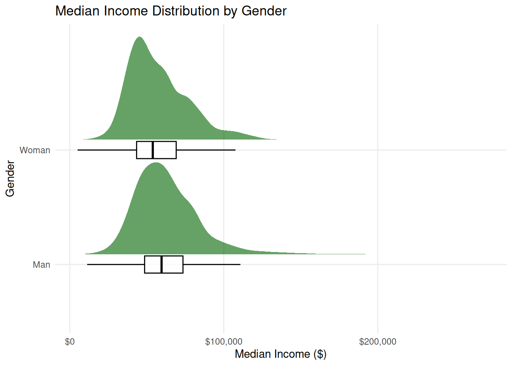
# Expand the dataframe based on 'number_graduates' weight
expanded_data = income_data.loc[
np.repeat(income_data.index, income_data["number_graduates"].astype(int))
]
# Set up the visual style
sns.set_theme(style="whitegrid")
fig, ax = plt.subplots(figsize=(8, 5))
# Draw the half-eye / distribution and boxplot components using the expanded data
sns.violinplot(
data=expanded_data,
x="median_income",
y="gender",
order=["Woman", "Man"],
split=True,
color="darkgreen",
inner="box",
alpha=0.6,
bw_adjust=2,
ax=ax,
)
# Format labels and axes
ax.set_title("Median Income Distribution by Gender", fontsize=13, pad=12)
ax.set_ylabel("Gender", fontsize=11)
ax.set_xlabel("Median Income ($)", fontsize=11)
# Format x-axis as currency
formatter = ticker.StrMethodFormatter("${x:,.0f}")
ax.xaxis.set_major_formatter(formatter)
# Clean up grid lines
ax.grid(True, which="major", alpha=0.5)
ax.grid(False, which="minor")
plt.tight_layout()
plt.show()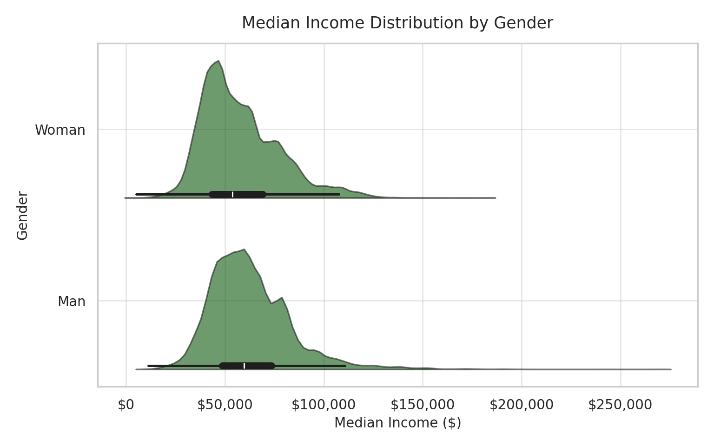
We can see that the income distribution for men has a higher median value, and is less right-skewed than the distribution for women. This suggests that in our dataset, more men are making higher incomes than women.
Median Income by Population Group
This visualization investigates the income distributions by population group, a proxy for ethnicity.
ggplot(income_data, aes(
y = fct_rev(fct_reorder(population_group, median_income, .fun = median, .na_rm = TRUE)),
x = median_income)) +
stat_halfeye(aes(weight = number_graduates),
adjust = 1.5,
justification = -0.1,
.width = 0,
point_colour = NA,
alpha = 0.6,
fill = "darkgreen") +
geom_boxplot(aes(weight = number_graduates),
width = 0.15,
outlier.shape = NA,
alpha = 0.7,
color = "black") +
scale_x_continuous(labels = scales::dollar_format()) +
labs(
title = "Median Income Distribution by Population Group",
subtitle = "Ordered by Median Income",
y = "Population Group",
x = "Median Income ($)"
) +
theme_minimal(base_size = 11) +
theme(legend.position = "none", panel.grid.minor = element_blank())Warning in rq.fit.br(wx, wy, tau = tau, ...): Solution may be nonunique
Warning in rq.fit.br(wx, wy, tau = tau, ...): Solution may be nonunique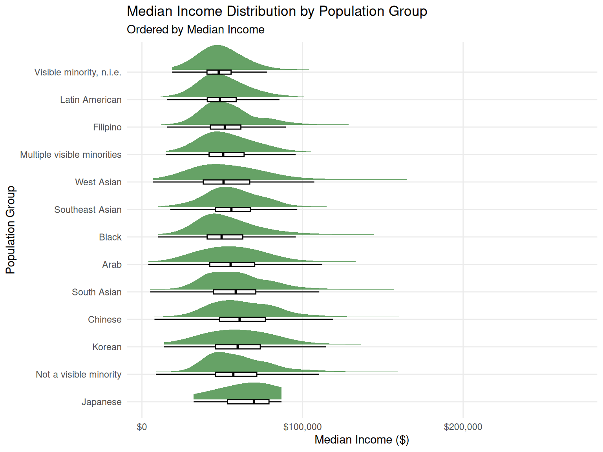
# Set up the visual style
sns.set_theme(style="whitegrid")
fig, ax = plt.subplots(figsize=(8, 7))
# Compute order based on median income (ascending order)
group_order = (
expanded_data.groupby("population_group")["median_income"]
.median()
.sort_values(ascending=True)
.index
)
# Draw the half-eye / distribution and boxplot components using the expanded data
sns.violinplot(
data=expanded_data,
x="median_income",
y="population_group",
order = group_order,
split=True,
color="darkgreen",
inner="box",
alpha=0.6,
bw_adjust=2,
ax=ax,
)
# Format labels and axes
ax.set_title("Median Income Distribution by Population Group", fontsize=13, pad=20, loc='left')
ax.text(
0.0, 1.02, "Ordered by Median Income",
transform=ax.transAxes, fontsize=10, color="gray"
)
ax.set_ylabel("Population Group", fontsize=11)
ax.set_xlabel("Median Income ($)", fontsize=11)
# Format x-axis as currency
formatter = ticker.StrMethodFormatter("${x:,.0f}")
ax.xaxis.set_major_formatter(formatter)
# Clean up grid lines
ax.grid(True, which="major", alpha=0.5)
ax.grid(False, which="minor")
plt.tight_layout()
plt.show()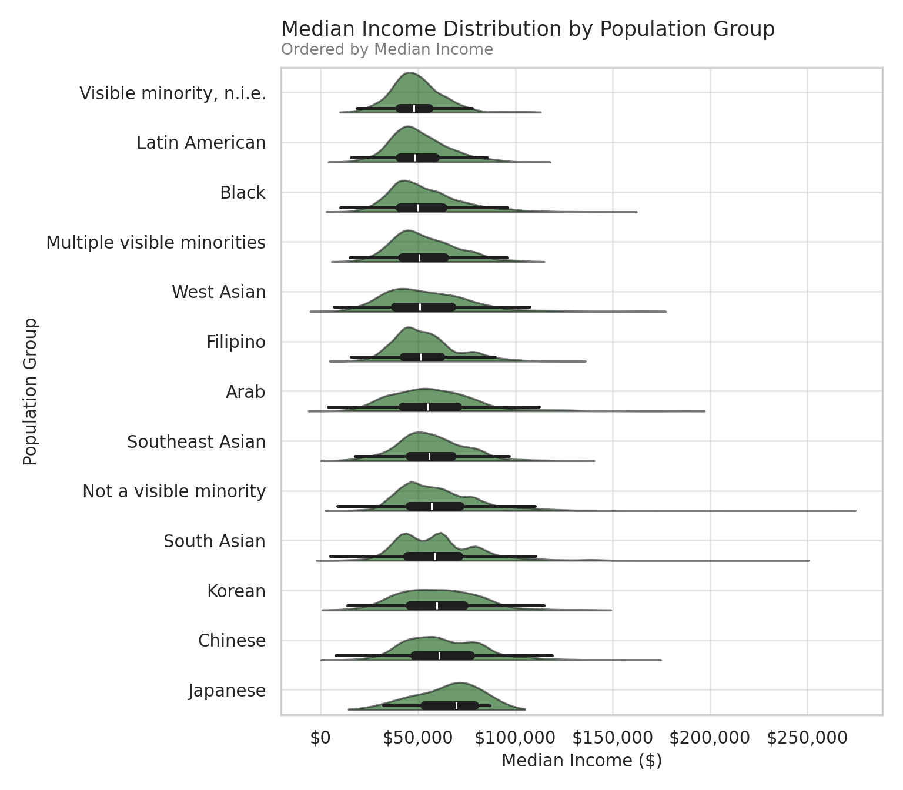
We can see that there are some differences by population groups in our visualization. Notably, “Visible minority, n.i.e.”, which stands for “not included elsewhere”, aka minority groups that don’t fall into one of the major categories, has the lowest median income. Similar groups with low median incomes include “Latin American”, “Black”, and “Multiple visible minorities”. The groups with higher median incomes include “Japanese”, “Chinese”, and “Korean”.
Median Income by Educational Qualification
This visualization investigates the impact of the type of educational qualification or degree on the income distribution of graduates.
ggplot(income_data, aes(
y = fct_rev(fct_reorder(educational_qualification, median_income, .fun = median, .na_rm = TRUE)),
x = median_income)) +
stat_halfeye(aes(weight = number_graduates),
adjust = 1.5,
justification = -0.1,
.width = 0,
point_colour = NA,
alpha = 0.6,
fill = "darkgreen") +
geom_boxplot(aes(weight = number_graduates),
width = 0.15,
outlier.shape = NA,
alpha = 0.7,
color = "black") +
scale_x_continuous(labels = scales::dollar_format()) +
scale_y_discrete(labels = scales::label_wrap(width = 35)) +
labs(
title = "Median Income Distribution by Educational Qualification",
subtitle = "Ordered by Median Income",
y = "Educational Qualification",
x = "Median Income ($)"
) +
theme_minimal(base_size = 11) +
theme(legend.position = "none", panel.grid.minor = element_blank())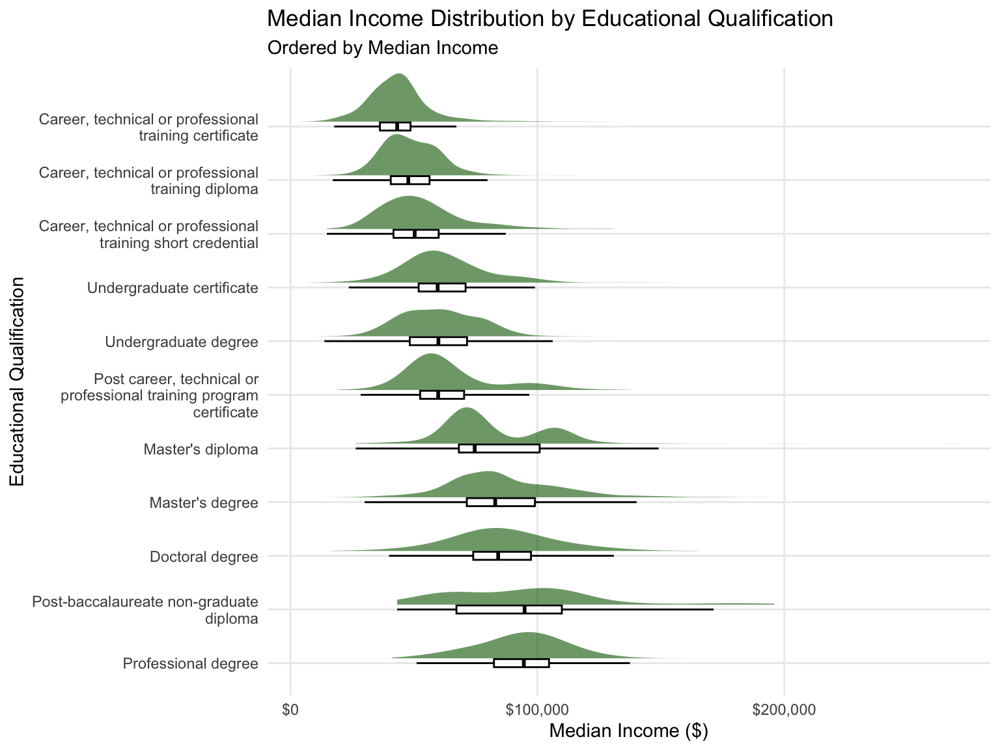
# Set up the visual style
sns.set_theme(style="whitegrid")
fig, ax = plt.subplots(figsize=(8, 7))
# Compute order based on median income (ascending order)
group_order = (
expanded_data.groupby("educational_qualification")["median_income"]
.median()
.sort_values(ascending=True)
.index
)
# Draw the half-eye / distribution and boxplot components using the expanded data
sns.violinplot(
data=expanded_data,
x="median_income",
y="educational_qualification",
order = group_order,
split=True,
color="darkgreen",
inner="box",
alpha=0.6,
bw_adjust=2,
ax=ax,
)
# Format labels and axes
current_labels = [textwrap.fill(label.get_text(), width=35) for label in ax.get_yticklabels()]
ax.set_yticklabels(current_labels)
ax.set_title("Median Income Distribution by Educational Qualification", fontsize=13, pad=20, loc='left')
ax.text(
0.0, 1.02, "Ordered by Median Income",
transform=ax.transAxes, fontsize=10, color="gray"
)
ax.set_ylabel("Educational Qualification", fontsize=11)
ax.set_xlabel("Median Income ($)", fontsize=11)
# Format x-axis as currency
formatter = ticker.StrMethodFormatter("${x:,.0f}")
ax.xaxis.set_major_formatter(formatter)
# Clean up grid lines
ax.grid(True, which="major", alpha=0.5)
ax.grid(False, which="minor")
plt.tight_layout()
plt.show()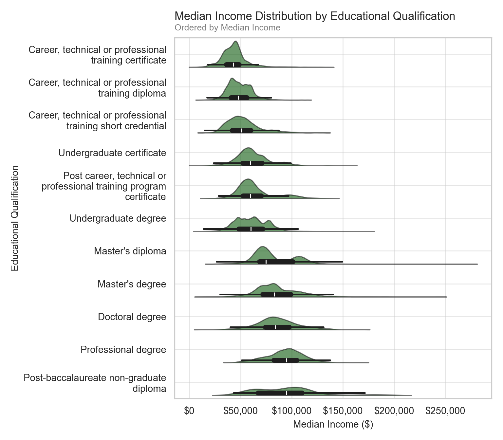
We can see that, as is expected, the more advanced educational qualifications appear to have higher median incomes, such as professional degrees or doctoral degrees.
Median Income by Field of Study
This visualization investigates income distributions by different fields of study.
ggplot(income_data, aes(
y = fct_rev(fct_reorder(field_of_study, median_income, .fun = median, .na_rm = TRUE)),
x = median_income)) +
stat_halfeye(aes(weight = number_graduates),
adjust = 1.5,
justification = -0.1,
.width = 0,
point_colour = NA,
alpha = 0.6,
fill = "darkgreen") +
geom_boxplot(aes(weight = number_graduates),
width = 0.15,
outlier.shape = NA,
alpha = 0.7,
color = "black") +
scale_x_continuous(labels = scales::dollar_format()) +
scale_y_discrete(labels = scales::label_wrap(width = 35)) +
labs(
title = "Median Income Distribution by Field of Study",
subtitle = "Ordered by Median Income",
y = "Field of Study",
x = "Median Income ($)"
) +
theme_minimal(base_size = 11) +
theme(legend.position = "none", panel.grid.minor = element_blank())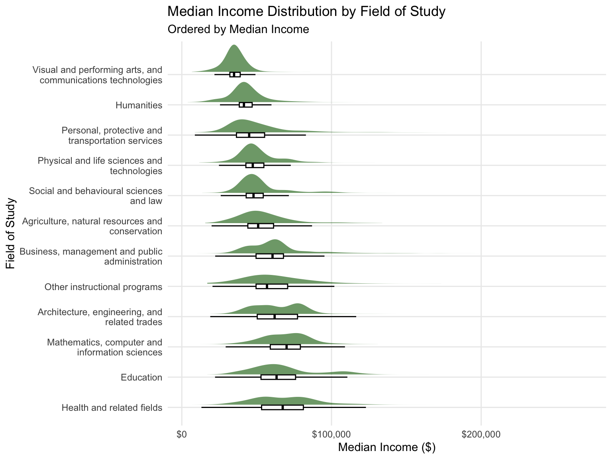
# Set up the visual style
sns.set_theme(style="whitegrid")
fig, ax = plt.subplots(figsize=(8, 7))
# Compute order based on median income (ascending order)
group_order = (
expanded_data.groupby("field_of_study")["median_income"]
.median()
.sort_values(ascending=True)
.index
)
# Draw the half-eye / distribution and boxplot components using the expanded data
sns.violinplot(
data=expanded_data,
x="median_income",
y="field_of_study",
order = group_order,
split=True,
color="darkgreen",
inner="box",
alpha=0.6,
bw_adjust=2,
ax=ax,
)
# Format labels and axes
current_labels = [textwrap.fill(label.get_text(), width=35) for label in ax.get_yticklabels()]
ax.set_yticklabels(current_labels)
ax.set_title("Median Income Distribution by Field of Study", fontsize=13, pad=20, loc='left')
ax.text(
0.0, 1.02, "Ordered by Median Income",
transform=ax.transAxes, fontsize=10, color="gray"
)
ax.set_ylabel("Field of Study", fontsize=11)
ax.set_xlabel("Median Income ($)", fontsize=11)
# Format x-axis as currency
formatter = ticker.StrMethodFormatter("${x:,.0f}")
ax.xaxis.set_major_formatter(formatter)
# Clean up grid lines
ax.grid(True, which="major", alpha=0.5)
ax.grid(False, which="minor")
plt.tight_layout()
plt.show()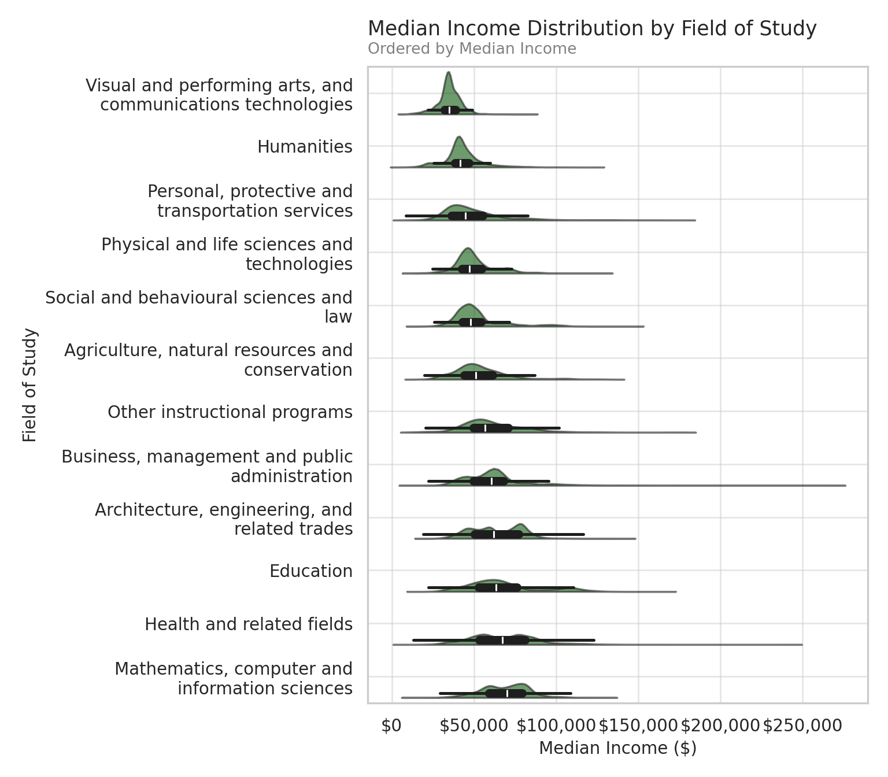
We can see that the fields with the lowest median incomes are visual and performing arts, humanities, and transportation services, while the fields with the highest median incomes include math and computer sciences, health fields, and education.
3. Hypothesis Testing
To evaluate whether different demographics experience significantly different median incomes, we begin by investigating gender.
NoteStatistical Hypotheses (Gender)
- \(H_0\) (Null): The distributions of median income are identical across genders.
- \(H_a\) (Alternative): The distributions of median income are not identical across genders.
Before performing an ANOVA test, we must verify its underlying statistical assumptions:
Independence of Observations:
Because the dataset contains distinct aggregate rows per graduate subgroup with no repeated measures, the independence assumption is reasonably satisfied.Normality of Residuals:
We examine the residuals using a Q-Q plot. If normality holds, the residual points should closely track the 45-degree reference line.
anova_gender_model <- aov(median_income ~ gender, data = income_data)
qqnorm(residuals(anova_gender_model))
qqline(residuals(anova_gender_model), col = "red", lwd = 2)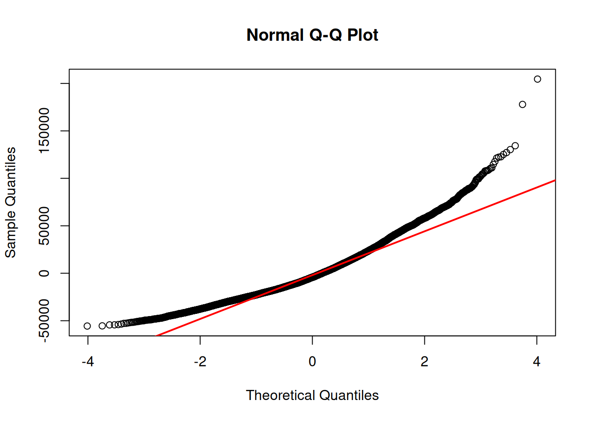
anova_model = smf.ols("median_income ~ C(gender)", data=income_data).fit()
residuals = anova_model.resid
fig = sm.qqplot(residuals, line="45", fit=True)
plt.title("Normal Q-Q Plot of ANOVA Residuals", fontsize=12)
plt.show()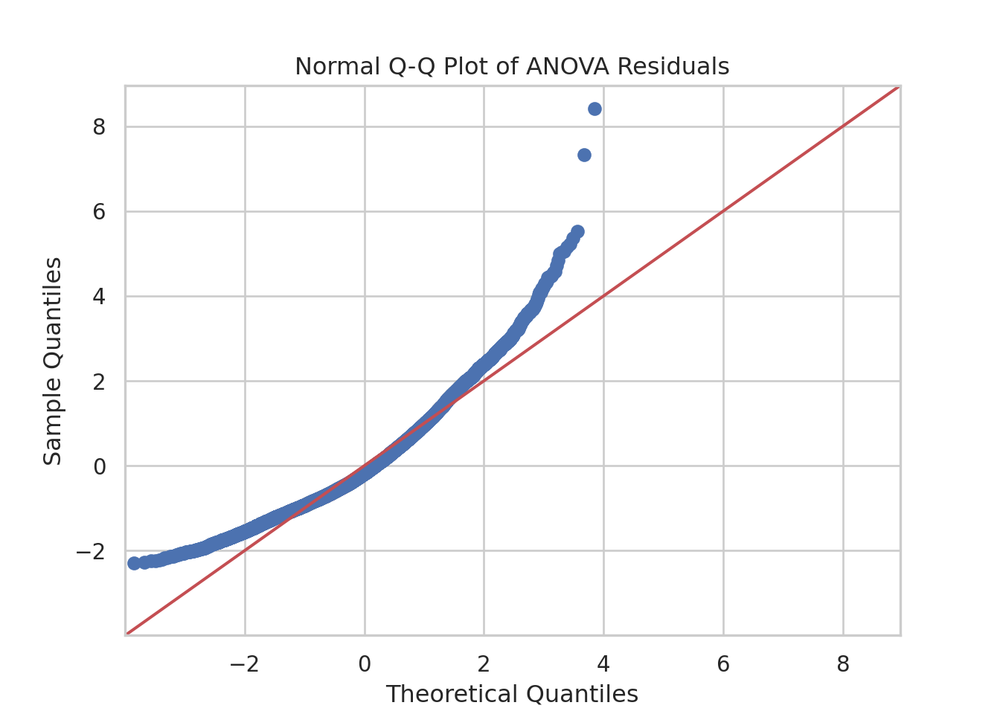
Above, we can see that the residuals are not normally distributed, as the points deviate from the red line on both extremes.
We can additionally test this normality by making a density plot of the residuals, and visually inspecting the shape of the curve.
ggplot(data.frame(resids = residuals(anova_gender_model)), aes(x = resids)) +
geom_density(fill = "#7EA8F8", alpha = 0.6) +
labs(
title = "Density Plot of ANOVA Residuals",
x = "Residuals",
y = "Density"
) +
theme_minimal()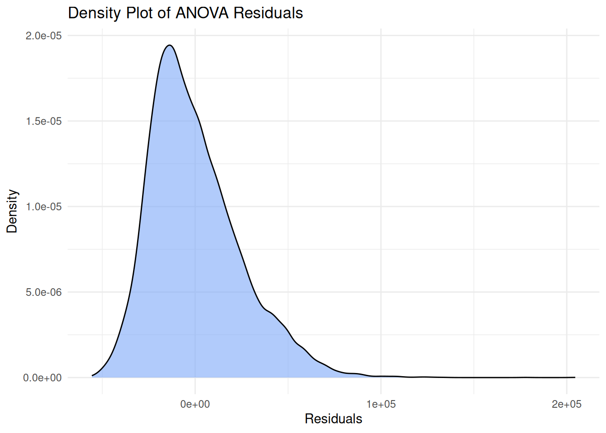
resid_df = pd.DataFrame({"resids": residuals})
# Set visual style
sns.set_theme(style="whitegrid")
fig, ax = plt.subplots(figsize=(8, 5), layout="constrained")
# Create the density plot (equivalent to geom_density)
sns.kdeplot(
data=resid_df,
x="resids",
fill=True,
color="#7EA8F8",
alpha=0.6,
ax=ax,
)
# Format titles and labels (Left-aligned title)
ax.set_title("Density Plot of ANOVA Residuals", fontsize=13, pad=15, loc="left")
ax.set_xlabel("Residuals", fontsize=11)
ax.set_ylabel("Density", fontsize=11)
# Clean grid lines
ax.grid(True, which="major", alpha=0.5)
ax.grid(False, which="minor")
plt.show()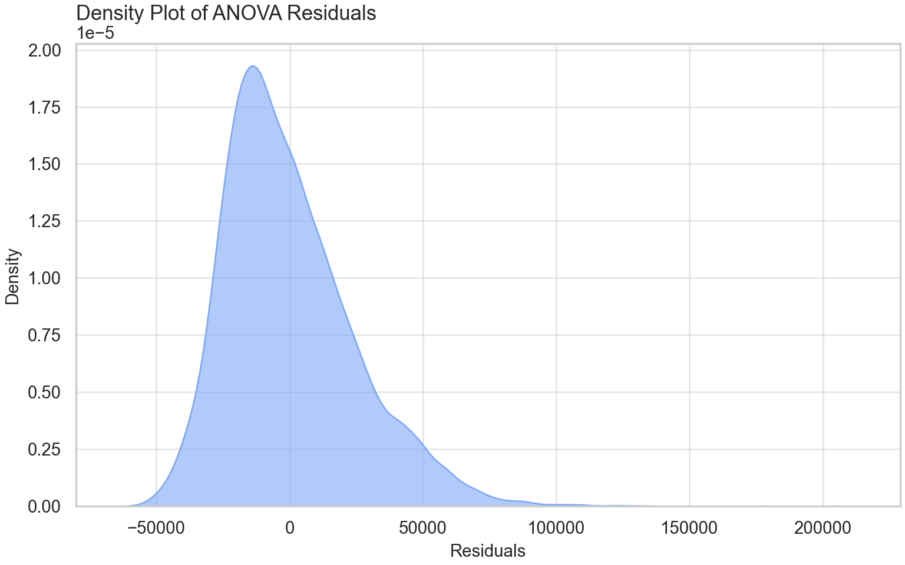
We can see that the residuals are not normally distributed above, but instead are right-skewed. This is typical in income datasets, as most people have a low to moderate income, while a small number of people earn very high amounts, as discussed in Passion Driven Statistics.
- Homogeneity of Variances - Levene’s test For ANOVA, we also need to check if the different groups have comparable amounts of variance.
leveneTest(median_income ~ gender, data = income_data)Levene's Test for Homogeneity of Variance (center = median)
Df F value Pr(>F)
group 1 19.612 9.545e-06 ***
16634
---
Signif. codes: 0 '***' 0.001 '**' 0.01 '*' 0.05 '.' 0.1 ' ' 1# Group the median_income values by the categories in 'gender'
# We use a list comprehension to pass each group's data as a separate argument to stats.levene
groups = [group["median_income"].values for _, group in income_data.groupby("gender")]
# Run Levene's test (using the default median-based center)
levene_result = stats.levene(*groups, center="median")
print(f"Statistic: {levene_result.statistic:.4f}")Statistic: 19.6124print(f"p-value: {levene_result.pvalue:.4f}")p-value: 0.0000We can see that the variances are not homogeneous in our datset, as the p-value from the Levene’s test is smaller than 0.05.
Since the residuals are not normally distributed and the variances are not homogeneous, we cannot use an ANOVA test. Instead, we will use a non-parametric Kruskal-Wallis test.
kruskal.test(median_income ~ gender, data = income_data)
Kruskal-Wallis rank sum test
data: median_income by gender
Kruskal-Wallis chi-squared = 249.95, df = 1, p-value < 2.2e-16kruskal_result = stats.kruskal(*groups)
print(f"H-statistic: {kruskal_result.statistic:.4f}")H-statistic: 249.9473print(f"p-value: {kruskal_result.pvalue:.4f}")p-value: 0.0000Since p-value is smaller than 0.05, we can reject the null hypothesis in favor of the alternative, and conclude that there is statistical evidence for a difference in median income between men and women in our dataset.
Hypothesis Testing: Population Group
Following the same analytical framework, we evaluate whether median incomes differ significantly across population groups.
NoteStatistical Hypotheses (Population Group)
- \(H_0\) (Null): The distributions of median income are identical across all population groups.
- \(H_a\) (Alternative): The distributions of median income are not identical across all population groups.
Next, we verify the underlying assumptions for our test:
Independence of Observations:
Because the dataset contains distinct aggregate rows per graduate subgroup with no repeated measures, the independence assumption remains satisfied.Normality of Residuals:
anova_popgroup_model <- aov(median_income ~ population_group, data = income_data)
qqnorm(residuals(anova_popgroup_model))
qqline(residuals(anova_popgroup_model), col = "red", lwd = 2)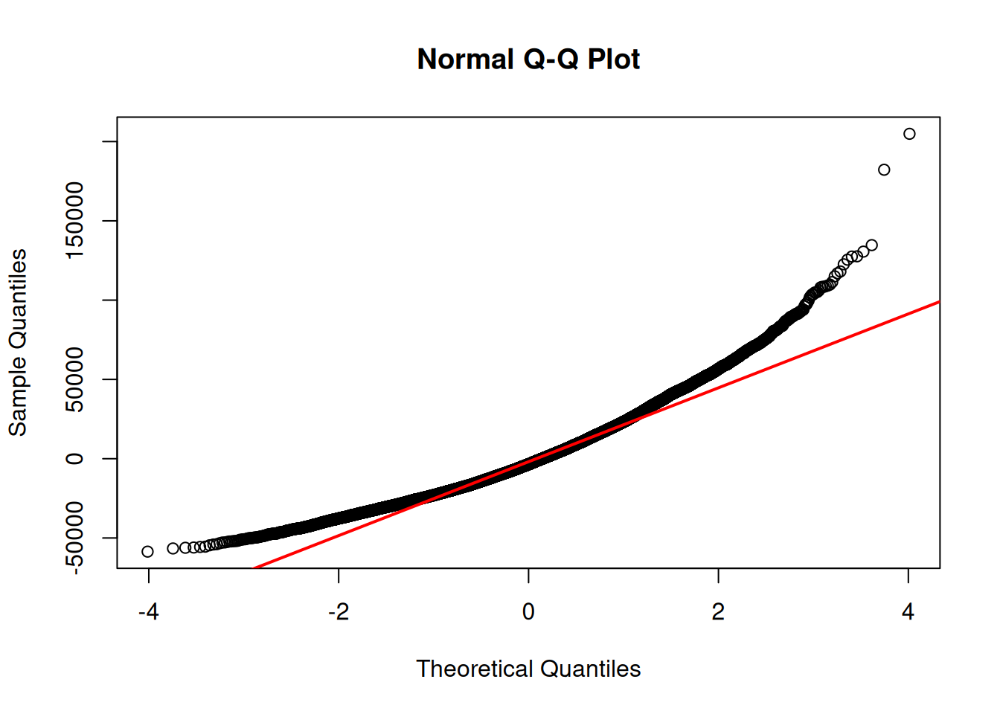
anova_popgroup_model = smf.ols("median_income ~ C(population_group)", data=income_data).fit()
residuals_popgroup = anova_popgroup_model.resid
fig = sm.qqplot(residuals_popgroup, line="45", fit=True)
plt.title("Normal Q-Q Plot of ANOVA Residuals", fontsize=12)
plt.show()ggplot(data.frame(resids = residuals(anova_popgroup_model)), aes(x = resids)) +
geom_density(fill = "#7EA8F8", alpha = 0.6) +
labs(
title = "Density Plot of ANOVA Residuals",
x = "Residuals",
y = "Density"
) +
theme_minimal()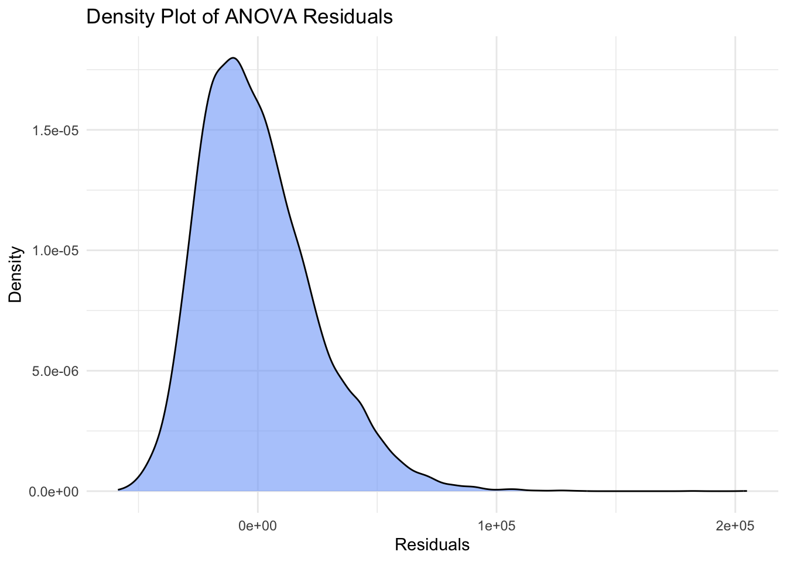
resid_popgroup_df = pd.DataFrame({"resids": residuals_popgroup})
# Set visual style
sns.set_theme(style="whitegrid")
fig, ax = plt.subplots(figsize=(8, 5), layout="constrained")
# Create the density plot (equivalent to geom_density)
sns.kdeplot(
data=resid_popgroup_df,
x="resids",
fill=True,
color="#7EA8F8",
alpha=0.6,
ax=ax,
)
# Format titles and labels (Left-aligned title)
ax.set_title("Density Plot of ANOVA Residuals", fontsize=13, pad=15, loc="left")
ax.set_xlabel("Residuals", fontsize=11)
ax.set_ylabel("Density", fontsize=11)
# Clean grid lines
ax.grid(True, which="major", alpha=0.5)
ax.grid(False, which="minor")
plt.show()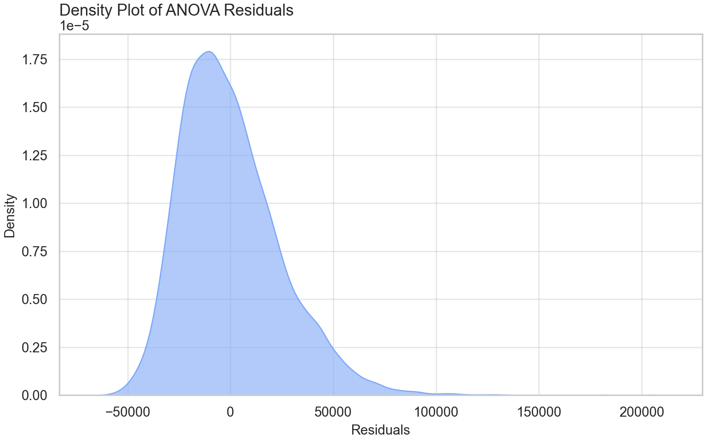
Again, from both the Q-Q plot and the residuals density plot, we can see that the residuals are not normally distributed.
- Homogeneity of Variances - Levene’s test
leveneTest(median_income ~ population_group, data = income_data)Levene's Test for Homogeneity of Variance (center = median)
Df F value Pr(>F)
group 12 33.816 < 2.2e-16 ***
16623
---
Signif. codes: 0 '***' 0.001 '**' 0.01 '*' 0.05 '.' 0.1 ' ' 1# Group the median_income values by the categories in 'population_group'
# We use a list comprehension to pass each group's data as a separate argument to stats.levene
groups_pop = [group["median_income"].values for _, group in income_data.groupby("population_group")]
# Run Levene's test (using the default median-based center)
levene_result_pop = stats.levene(*groups_pop, center="median")
print(f"Statistic: {levene_result_pop.statistic:.4f}")Statistic: 33.8160print(f"p-value: {levene_result_pop.pvalue:.4f}")p-value: 0.0000Similarly, since the p-value is less than 0.05, we can conclude that the variances are heterogeneous, and this assumption is violated.
Therefore, since the residuals are not normally distributed and the variances are not homogeneous, we cannot use ANOVA and instead will use a Kruskal-Wallis test.
kruskal.test(median_income ~ population_group, data = income_data)
Kruskal-Wallis rank sum test
data: median_income by population_group
Kruskal-Wallis chi-squared = 441.45, df = 12, p-value < 2.2e-16kruskal_result_pop = stats.kruskal(*groups_pop)
print(f"H-statistic: {kruskal_result_pop.statistic:.4f}")H-statistic: 441.4463print(f"p-value: {kruskal_result_pop.pvalue:.4f}")p-value: 0.0000Since p-value is smaller than 0.05, we can reject the null hypothesis in favor of the alternative, that the distributions of median income are not identical across all population groups. To find out which groups differ, we need to conduct a Dunn’s Post-Hoc test with a Bonferroni correction for multiple comparisons.
# Run Dunn's test with Bonferroni correction
dunnTest(median_income ~ population_group, data = income_data, method = "bonferroni") Kruskal-Wallis rank sum test
data: x and g
Kruskal-Wallis chi-squared = 441.4463, df = 12, p-value = 0
Dunn's Pairwise Comparison of x by g
(Bonferroni)
Col Mean-│
Row Mean │ Arab Black Chinese Filipino Japanese Korean
─────────┼──────────────────────────────────────────────────────────────────
Black │ 1.075043
│ 1.0000
│
Chinese │ -4.179848 -6.352509
│ 0.0023* 0.0000*
│
Filipino │ 3.966620 3.457290 9.008395
│ 0.0057* 0.0426* 0.0000*
│
Japanese │ -1.502771 -1.714895 -0.727517 -2.333302
│ 1.0000 1.0000 1.0000 1.0000
│
Korean │ -1.702668 -2.489163 0.829061 -4.402021 0.943508
│ 1.0000 0.9987 1.0000 0.0008* 1.0000
│
Latin Am │ 5.398594 5.063674 9.873877 1.899024 2.749017 5.491655
│ 0.0000* 0.0000* 0.0000* 1.0000 0.4662 0.0000*
│
Multiple │ 2.795629 2.227518 6.090442 -0.192745 2.243680 3.645668
│ 0.4040 1.0000 0.0000* 1.0000 1.0000 0.0208*
│
Not a vi │ -5.701684 -9.274843 -1.066412 -11.63516 0.606254 -1.323645
│ 0.0000* 0.0000* 1.0000 0.0000* 1.0000 1.0000
│
South As │ -1.698926 -3.372017 3.070749 -6.435489 1.194381 0.744825
│ 1.0000 0.0582 0.1665 0.0000* 1.0000 1.0000
│
Southeas │ 0.835576 0.063859 4.199237 -2.386338 1.702492 2.170446
│ 1.0000 1.0000 0.0021* 1.0000 1.0000 1.0000
│
Visible │ 4.817782 4.458149 7.121569 2.702420 3.202361 5.337825
│ 0.0001* 0.0006* 0.0000* 0.5369 0.1063 0.0000*
│
West Asi │ 2.093965 1.455992 5.433813 -0.988740 2.041433 3.110133
│ 1.0000 1.0000 0.0000* 1.0000 1.0000 0.1459
Col Mean-│
Row Mean │ Latin Am Multiple Not a vi South As Southeas Visible
─────────┼──────────────────────────────────────────────────────────────────
Multiple │ -1.658353
│ 1.0000
│
Not a vi │ -11.91891 -7.126342
│ 0.0000* 0.0000*
│
South As │ -7.649699 -4.281610 5.126390
│ 0.0000* 0.0014* 0.0000*
│
Southeas │ -3.771738 -1.774095 5.185605 2.251838
│ 0.0126* 1.0000 0.0000* 1.0000
│
Visible │ 1.522750 2.562213 7.732767 5.875727 3.973969
│ 1.0000 0.8113 0.0000* 0.0000* 0.0055*
│
West Asi │ -2.433761 -0.650850 6.466451 3.567683 1.129752 -3.089427
│ 1.0000 1.0000 0.0000* 0.0281* 1.0000 0.1564
FWER = 0.05
Reject Ho if adjusted p ≤ FWER, where (unadjusted) p = Pr(|Z| ≥ |z|)
Dunn (1964) Kruskal-Wallis multiple comparison
p-values adjusted with the Bonferroni method. Comparison Z
1 Arab - Black 1.07504310
2 Arab - Chinese -4.17984839
3 Black - Chinese -6.35250976
4 Arab - Filipino 3.96662098
5 Black - Filipino 3.45729010
6 Chinese - Filipino 9.00839505
7 Arab - Japanese -1.50277101
8 Black - Japanese -1.71489523
9 Chinese - Japanese -0.72751710
10 Filipino - Japanese -2.33330275
11 Arab - Korean -1.70266866
12 Black - Korean -2.48916310
13 Chinese - Korean 0.82906119
14 Filipino - Korean -4.40202141
15 Japanese - Korean 0.94350803
16 Arab - Latin American 5.39859477
17 Black - Latin American 5.06367492
18 Chinese - Latin American 9.87387758
19 Filipino - Latin American 1.89902432
20 Japanese - Latin American 2.74901726
21 Korean - Latin American 5.49165566
22 Arab - Multiple visible minorities 2.79562932
23 Black - Multiple visible minorities 2.22751858
24 Chinese - Multiple visible minorities 6.09044206
25 Filipino - Multiple visible minorities -0.19274488
26 Japanese - Multiple visible minorities 2.24368043
27 Korean - Multiple visible minorities 3.64566855
28 Latin American - Multiple visible minorities -1.65835360
29 Arab - Not a visible minority -5.70168471
30 Black - Not a visible minority -9.27484356
31 Chinese - Not a visible minority -1.06641231
32 Filipino - Not a visible minority -11.63516089
33 Japanese - Not a visible minority 0.60625425
34 Korean - Not a visible minority -1.32364521
35 Latin American - Not a visible minority -11.91891181
36 Multiple visible minorities - Not a visible minority -7.12634237
37 Arab - South Asian -1.69892654
38 Black - South Asian -3.37201768
39 Chinese - South Asian 3.07074910
40 Filipino - South Asian -6.43548974
41 Japanese - South Asian 1.19438122
42 Korean - South Asian 0.74482525
43 Latin American - South Asian -7.64969953
44 Multiple visible minorities - South Asian -4.28161091
45 Not a visible minority - South Asian 5.12639065
46 Arab - Southeast Asian 0.83557620
47 Black - Southeast Asian 0.06385869
48 Chinese - Southeast Asian 4.19923783
49 Filipino - Southeast Asian -2.38633823
50 Japanese - Southeast Asian 1.70249260
51 Korean - Southeast Asian 2.17044606
52 Latin American - Southeast Asian -3.77173808
53 Multiple visible minorities - Southeast Asian -1.77409535
54 Not a visible minority - Southeast Asian 5.18560574
55 South Asian - Southeast Asian 2.25183887
56 Arab - Visible minority, n.i.e. 4.81778259
57 Black - Visible minority, n.i.e. 4.45814949
58 Chinese - Visible minority, n.i.e. 7.12156990
59 Filipino - Visible minority, n.i.e. 2.70242025
60 Japanese - Visible minority, n.i.e. 3.20236159
61 Korean - Visible minority, n.i.e. 5.33782591
62 Latin American - Visible minority, n.i.e. 1.52275048
63 Multiple visible minorities - Visible minority, n.i.e. 2.56221305
64 Not a visible minority - Visible minority, n.i.e. 7.73276722
65 South Asian - Visible minority, n.i.e. 5.87572717
66 Southeast Asian - Visible minority, n.i.e. 3.97396984
67 Arab - West Asian 2.09396560
68 Black - West Asian 1.45599270
69 Chinese - West Asian 5.43381397
70 Filipino - West Asian -0.98874023
71 Japanese - West Asian 2.04143336
72 Korean - West Asian 3.11013307
73 Latin American - West Asian -2.43376154
74 Multiple visible minorities - West Asian -0.65085037
75 Not a visible minority - West Asian 6.46645118
76 South Asian - West Asian 3.56768386
77 Southeast Asian - West Asian 1.12975219
78 Visible minority, n.i.e. - West Asian -3.08942732
P.unadj P.adj
1 2.823554e-01 1.000000e+00
2 2.917035e-05 2.275287e-03
3 2.118300e-10 1.652274e-08
4 7.289878e-05 5.686105e-03
5 5.456371e-04 4.255970e-02
6 2.090939e-19 1.630933e-17
7 1.328981e-01 1.000000e+00
8 8.636444e-02 1.000000e+00
9 4.669092e-01 1.000000e+00
10 1.963226e-02 1.000000e+00
11 8.863009e-02 1.000000e+00
12 1.280442e-02 9.987448e-01
13 4.070698e-01 1.000000e+00
14 1.072470e-05 8.365264e-04
15 3.454211e-01 1.000000e+00
16 6.716489e-08 5.238861e-06
17 4.112507e-07 3.207755e-05
18 5.403449e-23 4.214690e-21
19 5.756128e-02 1.000000e+00
20 5.977424e-03 4.662391e-01
21 3.981831e-08 3.105829e-06
22 5.179877e-03 4.040304e-01
23 2.591264e-02 1.000000e+00
24 1.125993e-09 8.782748e-08
25 8.471588e-01 1.000000e+00
26 2.485297e-02 1.000000e+00
27 2.666975e-04 2.080241e-02
28 9.724612e-02 1.000000e+00
29 1.186291e-08 9.253069e-07
30 1.778799e-20 1.387463e-18
31 2.862373e-01 1.000000e+00
32 2.730747e-31 2.129983e-29
33 5.443459e-01 1.000000e+00
34 1.856209e-01 1.000000e+00
35 9.433257e-33 7.357941e-31
36 1.030712e-12 8.039550e-11
37 8.933303e-02 1.000000e+00
38 7.461966e-04 5.820333e-02
39 2.135225e-03 1.665475e-01
40 1.230758e-10 9.599916e-09
41 2.323289e-01 1.000000e+00
42 4.563774e-01 1.000000e+00
43 2.014495e-14 1.571306e-12
44 1.855452e-05 1.447253e-03
45 2.953495e-07 2.303726e-05
46 4.033934e-01 1.000000e+00
47 9.490827e-01 1.000000e+00
48 2.678149e-05 2.088956e-03
49 1.701709e-02 1.000000e+00
50 8.866306e-02 1.000000e+00
51 2.997307e-02 1.000000e+00
52 1.621144e-04 1.264492e-02
53 7.604738e-02 1.000000e+00
54 2.153139e-07 1.679448e-05
55 2.433246e-02 1.000000e+00
56 1.451624e-06 1.132267e-04
57 8.267024e-06 6.448279e-04
58 1.067046e-12 8.322958e-11
59 6.883670e-03 5.369262e-01
60 1.363058e-03 1.063185e-01
61 9.406771e-08 7.337281e-06
62 1.278211e-01 1.000000e+00
63 1.040075e-02 8.112585e-01
64 1.052336e-14 8.208222e-13
65 4.209912e-09 3.283731e-07
66 7.068452e-05 5.513392e-03
67 3.626304e-02 1.000000e+00
68 1.453946e-01 1.000000e+00
69 5.516209e-08 4.302643e-06
70 3.227903e-01 1.000000e+00
71 4.120777e-02 1.000000e+00
72 1.870031e-03 1.458624e-01
73 1.494284e-02 1.000000e+00
74 5.151431e-01 1.000000e+00
75 1.003312e-10 7.825835e-09
76 3.601507e-04 2.809175e-02
77 2.585807e-01 1.000000e+00
78 2.005428e-03 1.564234e-01dunn_results = sp.posthoc_dunn(
expanded_data,
val_col="median_income",
group_col="population_group",
p_adjust="bonferroni"
)
print(dunn_results) Arab ... West Asian
Arab 1.000000e+00 ... 5.798177e-86
Black 0.000000e+00 ... 6.098350e-03
Chinese 0.000000e+00 ... 0.000000e+00
Filipino 5.033313e-153 ... 1.000000e+00
Japanese 7.019583e-29 ... 7.747430e-52
Korean 1.884370e-59 ... 4.386880e-179
Latin American 0.000000e+00 ... 2.160423e-53
Multiple visible minorities 2.488548e-90 ... 1.000000e+00
Not a visible minority 4.358251e-176 ... 0.000000e+00
South Asian 6.274158e-104 ... 3.780196e-290
Southeast Asian 3.673739e-03 ... 3.130330e-87
Visible minority, n.i.e. 1.997255e-224 ... 4.165221e-60
West Asian 5.798177e-86 ... 1.000000e+00
[13 rows x 13 columns]From both the Kruskal-Wallis and the Dunn’s Post-Hoc test, we can see that there are statistically significant differences in median income distributions between different population groups. Notable differences appear around comparing “Not a visible minority” to many groups, including “Arab”, “Black”, “Latin American”, etc.
4. Predictive Model
To understand the factors driving median income and identify variations across groups, we will build a linear regression model. Because our dataset is aggregated, where each row represents a group of individuals rather than a single person, we need to use the number of individuals contained in the number_graduates column as the weight of each row in data splitting as well as model training and evaluation.
Our modeling workflow is structured as follows:
- Data Splitting: We partition the weighted dataset into training and test sets to ensure unbiased evaluation.
- Coefficient & Group Analysis: We examine the model’s learned coefficients and their statistical significance to uncover key drivers and differences between groups.
- Performance Evaluation: We assess model generalizability by calculating the root mean squared error (RMSE) of our predictions on the test set.
set.seed(42)
# Split dataset to train and test sets using stratified splitting
# Ensures small and large weight rows are evenly distributed between train and test
data_split <- initial_split(income_data, prop = 0.8, strata = number_graduates)
# Create the training and testing sets
income_train_weighted <- training(data_split)
income_test_weighted <- testing(data_split)
np.random.seed(42)
# Bin the continuous 'number_graduates' column into discrete strata
# (Stratified splitting in scikit-learn requires categorical bins)
income_data["graduate_strata"] = pd.qcut(
income_data["number_graduates"], q=5, labels=False, duplicates="drop"
)
# Perform an 80/20 stratified split
income_train_weighted, income_test_weighted = train_test_split(
income_data,
test_size=0.2,
stratify=income_data["graduate_strata"],
random_state=42,
)
# Optional: Drop the temporary strata column if you no longer need it
#income_train_weighted = income_train_weighted.drop(columns=["graduate_strata"])
#income_test_weighted = income_test_weighted.drop(columns=["graduate_strata"])# Fit a weighted linear model
model_lm_weighted <- lm(median_income ~ educational_qualification + population_group + gender + field_of_study,
data = income_train_weighted,
weights = number_graduates)
# View coefficients and summary
summary(model_lm_weighted)
Call:
lm(formula = median_income ~ educational_qualification + population_group +
gender + field_of_study, data = income_train_weighted, weights = number_graduates)
Weighted Residuals:
Min 1Q Median 3Q Max
-946955 -66975 2198 76670 1414478
Coefficients:
Estimate
(Intercept) 31044.48
educational_qualificationCareer, technical or professional training diploma 8843.98
educational_qualificationCareer, technical or professional training short credential 14744.61
educational_qualificationDoctoral degree 54592.08
educational_qualificationMaster's degree 47391.53
educational_qualificationMaster's diploma 43709.51
educational_qualificationPost career, technical or professional training program certificate 25097.39
educational_qualificationPost-baccalaureate non-graduate diploma 52519.28
educational_qualificationProfessional degree 56240.06
educational_qualificationUndergraduate certificate 25890.24
educational_qualificationUndergraduate degree 24269.59
population_groupBlack 1927.43
population_groupChinese 5865.26
population_groupFilipino 4942.82
population_groupJapanese 9713.96
population_groupKorean 5789.46
population_groupLatin American 2277.43
population_groupMultiple visible minorities 1575.76
population_groupNot a visible minority 7136.39
population_groupSouth Asian 4263.29
population_groupSoutheast Asian 3235.09
population_groupVisible minority, n.i.e. -32.28
population_groupWest Asian -1135.69
genderWoman -4883.60
field_of_studyArchitecture, engineering, and related trades 12101.84
field_of_studyBusiness, management and public administration 5555.85
field_of_studyEducation 5750.37
field_of_studyHealth and related fields 14448.37
field_of_studyHumanities -16248.70
field_of_studyMathematics, computer and information sciences 11357.02
field_of_studyOther instructional programs 1304.71
field_of_studyPersonal, protective and transportation services 5115.95
field_of_studyPhysical and life sciences and technologies -12320.45
field_of_studySocial and behavioural sciences and law -6596.22
field_of_studyVisual and performing arts, and communications technologies -17637.22
Std. Error
(Intercept) 1151.84
educational_qualificationCareer, technical or professional training diploma 393.58
educational_qualificationCareer, technical or professional training short credential 642.48
educational_qualificationDoctoral degree 1219.72
educational_qualificationMaster's degree 479.81
educational_qualificationMaster's diploma 1058.11
educational_qualificationPost career, technical or professional training program certificate 762.65
educational_qualificationPost-baccalaureate non-graduate diploma 1957.48
educational_qualificationProfessional degree 822.83
educational_qualificationUndergraduate certificate 648.12
educational_qualificationUndergraduate degree 383.63
population_groupBlack 961.02
population_groupChinese 935.96
population_groupFilipino 1103.21
population_groupJapanese 7389.56
population_groupKorean 1876.56
population_groupLatin American 1313.02
population_groupMultiple visible minorities 1549.85
population_groupNot a visible minority 831.09
population_groupSouth Asian 917.07
population_groupSoutheast Asian 1540.16
population_groupVisible minority, n.i.e. 2178.71
population_groupWest Asian 1542.08
genderWoman 234.54
field_of_studyArchitecture, engineering, and related trades 769.46
field_of_studyBusiness, management and public administration 738.56
field_of_studyEducation 809.70
field_of_studyHealth and related fields 746.59
field_of_studyHumanities 899.64
field_of_studyMathematics, computer and information sciences 917.93
field_of_studyOther instructional programs 1773.44
field_of_studyPersonal, protective and transportation services 876.24
field_of_studyPhysical and life sciences and technologies 923.24
field_of_studySocial and behavioural sciences and law 749.43
field_of_studyVisual and performing arts, and communications technologies 877.61
t value
(Intercept) 26.952
educational_qualificationCareer, technical or professional training diploma 22.471
educational_qualificationCareer, technical or professional training short credential 22.950
educational_qualificationDoctoral degree 44.758
educational_qualificationMaster's degree 98.771
educational_qualificationMaster's diploma 41.309
educational_qualificationPost career, technical or professional training program certificate 32.908
educational_qualificationPost-baccalaureate non-graduate diploma 26.830
educational_qualificationProfessional degree 68.349
educational_qualificationUndergraduate certificate 39.946
educational_qualificationUndergraduate degree 63.263
population_groupBlack 2.006
population_groupChinese 6.267
population_groupFilipino 4.480
population_groupJapanese 1.315
population_groupKorean 3.085
population_groupLatin American 1.734
population_groupMultiple visible minorities 1.017
population_groupNot a visible minority 8.587
population_groupSouth Asian 4.649
population_groupSoutheast Asian 2.100
population_groupVisible minority, n.i.e. -0.015
population_groupWest Asian -0.736
genderWoman -20.822
field_of_studyArchitecture, engineering, and related trades 15.728
field_of_studyBusiness, management and public administration 7.523
field_of_studyEducation 7.102
field_of_studyHealth and related fields 19.353
field_of_studyHumanities -18.061
field_of_studyMathematics, computer and information sciences 12.372
field_of_studyOther instructional programs 0.736
field_of_studyPersonal, protective and transportation services 5.838
field_of_studyPhysical and life sciences and technologies -13.345
field_of_studySocial and behavioural sciences and law -8.802
field_of_studyVisual and performing arts, and communications technologies -20.097
Pr(>|t|)
(Intercept) < 2e-16
educational_qualificationCareer, technical or professional training diploma < 2e-16
educational_qualificationCareer, technical or professional training short credential < 2e-16
educational_qualificationDoctoral degree < 2e-16
educational_qualificationMaster's degree < 2e-16
educational_qualificationMaster's diploma < 2e-16
educational_qualificationPost career, technical or professional training program certificate < 2e-16
educational_qualificationPost-baccalaureate non-graduate diploma < 2e-16
educational_qualificationProfessional degree < 2e-16
educational_qualificationUndergraduate certificate < 2e-16
educational_qualificationUndergraduate degree < 2e-16
population_groupBlack 0.04492
population_groupChinese 3.80e-10
population_groupFilipino 7.51e-06
population_groupJapanese 0.18868
population_groupKorean 0.00204
population_groupLatin American 0.08285
population_groupMultiple visible minorities 0.30930
population_groupNot a visible minority < 2e-16
population_groupSouth Asian 3.37e-06
population_groupSoutheast Asian 0.03571
population_groupVisible minority, n.i.e. 0.98818
population_groupWest Asian 0.46146
genderWoman < 2e-16
field_of_studyArchitecture, engineering, and related trades < 2e-16
field_of_studyBusiness, management and public administration 5.72e-14
field_of_studyEducation 1.29e-12
field_of_studyHealth and related fields < 2e-16
field_of_studyHumanities < 2e-16
field_of_studyMathematics, computer and information sciences < 2e-16
field_of_studyOther instructional programs 0.46193
field_of_studyPersonal, protective and transportation services 5.39e-09
field_of_studyPhysical and life sciences and technologies < 2e-16
field_of_studySocial and behavioural sciences and law < 2e-16
field_of_studyVisual and performing arts, and communications technologies < 2e-16
(Intercept) ***
educational_qualificationCareer, technical or professional training diploma ***
educational_qualificationCareer, technical or professional training short credential ***
educational_qualificationDoctoral degree ***
educational_qualificationMaster's degree ***
educational_qualificationMaster's diploma ***
educational_qualificationPost career, technical or professional training program certificate ***
educational_qualificationPost-baccalaureate non-graduate diploma ***
educational_qualificationProfessional degree ***
educational_qualificationUndergraduate certificate ***
educational_qualificationUndergraduate degree ***
population_groupBlack *
population_groupChinese ***
population_groupFilipino ***
population_groupJapanese
population_groupKorean **
population_groupLatin American .
population_groupMultiple visible minorities
population_groupNot a visible minority ***
population_groupSouth Asian ***
population_groupSoutheast Asian *
population_groupVisible minority, n.i.e.
population_groupWest Asian
genderWoman ***
field_of_studyArchitecture, engineering, and related trades ***
field_of_studyBusiness, management and public administration ***
field_of_studyEducation ***
field_of_studyHealth and related fields ***
field_of_studyHumanities ***
field_of_studyMathematics, computer and information sciences ***
field_of_studyOther instructional programs
field_of_studyPersonal, protective and transportation services ***
field_of_studyPhysical and life sciences and technologies ***
field_of_studySocial and behavioural sciences and law ***
field_of_studyVisual and performing arts, and communications technologies ***
---
Signif. codes: 0 '***' 0.001 '**' 0.01 '*' 0.05 '.' 0.1 ' ' 1
Residual standard error: 146800 on 13272 degrees of freedom
Multiple R-squared: 0.65, Adjusted R-squared: 0.6491
F-statistic: 724.8 on 34 and 13272 DF, p-value: < 2.2e-16# Fit the weighted linear model using statsmodels formula interface (WLS)
# statsmodels automatically handles categorical columns (factors) using formula syntax
model_lm_weighted = smf.wls(
formula="median_income ~ educational_qualification + population_group + gender + field_of_study",
data=income_train_weighted,
weights=income_train_weighted["number_graduates"]
).fit()
# View coefficients and summary
print(model_lm_weighted.summary()) WLS Regression Results
==============================================================================
Dep. Variable: median_income R-squared: 0.649
Model: WLS Adj. R-squared: 0.648
Method: Least Squares F-statistic: 721.9
Date: Tue, 15 Sep 2026 Prob (F-statistic): 0.00
Time: 10:54:36 Log-Likelihood: -1.4889e+05
No. Observations: 13308 AIC: 2.979e+05
Df Residuals: 13273 BIC: 2.981e+05
Df Model: 34
Covariance Type: nonrobust
====================================================================================================================================================================
coef std err t P>|t| [0.025 0.975]
--------------------------------------------------------------------------------------------------------------------------------------------------------------------
Intercept 3.142e+04 1151.161 27.293 0.000 2.92e+04 3.37e+04
educational_qualification[T.Career, technical or professional training diploma] 8241.0774 409.763 20.112 0.000 7437.883 9044.272
educational_qualification[T.Career, technical or professional training short credential] 1.47e+04 655.404 22.428 0.000 1.34e+04 1.6e+04
educational_qualification[T.Doctoral degree] 5.479e+04 1242.771 44.088 0.000 5.24e+04 5.72e+04
educational_qualification[T.Master's degree] 4.741e+04 488.690 97.016 0.000 4.65e+04 4.84e+04
educational_qualification[T.Master's diploma] 4.34e+04 1103.261 39.342 0.000 4.12e+04 4.56e+04
educational_qualification[T.Post career, technical or professional training program certificate] 2.529e+04 776.618 32.568 0.000 2.38e+04 2.68e+04
educational_qualification[T.Post-baccalaureate non-graduate diploma] 5.631e+04 2089.349 26.953 0.000 5.22e+04 6.04e+04
educational_qualification[T.Professional degree] 5.635e+04 820.401 68.689 0.000 5.47e+04 5.8e+04
educational_qualification[T.Undergraduate certificate] 2.494e+04 673.503 37.037 0.000 2.36e+04 2.63e+04
educational_qualification[T.Undergraduate degree] 2.382e+04 394.604 60.362 0.000 2.3e+04 2.46e+04
population_group[T.Black] 1891.1901 963.501 1.963 0.050 2.590 3779.791
population_group[T.Chinese] 5683.1673 940.107 6.045 0.000 3840.424 7525.911
population_group[T.Filipino] 5157.3498 1104.645 4.669 0.000 2992.088 7322.611
population_group[T.Japanese] 8406.3853 7797.149 1.078 0.281 -6877.140 2.37e+04
population_group[T.Korean] 5443.0144 1945.455 2.798 0.005 1629.645 9256.383
population_group[T.Latin American] 2022.2688 1337.414 1.512 0.131 -599.253 4643.791
population_group[T.Multiple visible minorities] 1510.4744 1566.479 0.964 0.335 -1560.048 4580.997
population_group[T.Not a visible minority] 7080.2409 830.537 8.525 0.000 5452.271 8708.211
population_group[T.South Asian] 3913.3216 916.485 4.270 0.000 2116.881 5709.762
population_group[T.Southeast Asian] 3982.6957 1523.882 2.614 0.009 995.669 6969.722
population_group[T.Visible minority, n.i.e.] -236.2114 2225.611 -0.106 0.915 -4598.726 4126.303
population_group[T.West Asian] -480.3772 1563.157 -0.307 0.759 -3544.388 2583.633
gender[T.Woman] -5125.9304 238.112 -21.527 0.000 -5592.664 -4659.197
field_of_study[T.Architecture, engineering, and related trades] 1.222e+04 773.003 15.810 0.000 1.07e+04 1.37e+04
field_of_study[T.Business, management and public administration] 6107.6780 735.752 8.301 0.000 4665.499 7549.857
field_of_study[T.Education] 5440.3162 802.552 6.779 0.000 3867.201 7013.432
field_of_study[T.Health and related fields] 1.46e+04 742.667 19.654 0.000 1.31e+04 1.61e+04
field_of_study[T.Humanities] -1.646e+04 889.428 -18.501 0.000 -1.82e+04 -1.47e+04
field_of_study[T.Mathematics, computer and information sciences] 1.145e+04 937.390 12.218 0.000 9615.353 1.33e+04
field_of_study[T.Other instructional programs] 379.5514 1831.190 0.207 0.836 -3209.841 3968.944
field_of_study[T.Personal, protective and transportation services] 5628.9218 863.972 6.515 0.000 3935.414 7322.429
field_of_study[T.Physical and life sciences and technologies] -1.181e+04 920.498 -12.828 0.000 -1.36e+04 -1e+04
field_of_study[T.Social and behavioural sciences and law] -6424.9352 749.447 -8.573 0.000 -7893.959 -4955.912
field_of_study[T.Visual and performing arts, and communications technologies] -1.791e+04 864.314 -20.719 0.000 -1.96e+04 -1.62e+04
==============================================================================
Omnibus: 2494.437 Durbin-Watson: 1.994
Prob(Omnibus): 0.000 Jarque-Bera (JB): 18759.776
Skew: 0.698 Prob(JB): 0.00
Kurtosis: 8.646 Cond. No. 117.
==============================================================================
Notes:
[1] Standard Errors assume that the covariance matrix of the errors is correctly specified.Overall, this model performed reasonably well. The Adjusted R-squared (\(0.649\) in R and \(0.648\) in Python) indicates that this model can explain ~64.85% of the variance in median post-graduation income. This number, while not extremely high, provides a good baseline prediction for a complex social and economic dataset. The F-statistic also indicates that this model is doing well. With a p-value of \(p < 2.2 \times 10^{-16}\)), the model as a whole is statistically significant compared to an intercept-only model, which indicates that the explanatory variables used here do a decent job of explaining income differences.
We can interpret the coefficients from our model as well. The below interpretation uses the values from the R model, but similar interpretations can be made from the Python model as well. The intercept (\(\$31,044\)) represents the baseline predicted median income for the reference group (i.e. graduates in the group of “Man” and “Arab”, with education in “Career, technical or professional training certificate”, and “Agriculture, natural resources and conservation”). All coefficients represent the expected difference in median income relative to the reference category, holding all other variables constant:
- Gender: Being a woman, compared to being a man, is associated with a median income that is \(\$4,884\) lower, while holding all other variables constant.
- Population Group: Several groups show significant differences relative to the baseline group, “Arab”. For example, “Not a visible minority” shows an estimated increase of \(\$7,136\), while groups like Japanese, Multiple visible minorities, and West Asian do not show statistically significant differences (\(p > 0.05\)) after controlling for education, gender, and field of study.
- Educational qualification: Higher degrees show higher median incomes, as is expected. For example, a Doctoral degree is associated with an increase of \(\$54,592\), and a Professional degree with an increase of about \(\$56,240\), while holding all other variables constant.
- Field of Study: Fields like Health and related fields (\(\approx +\$14,448\)) and Architecture and engineering (\(\approx +\$12,102\)) show large positive coefficients, whereas fields like Visual and performing arts (\(\approx -\$17,637\)) and Humanities (\(\approx -\$16,249\)) show substantial negative adjustments compared to the baseline field of “Agriculture, natural resources and conservation”.
# Predict on test data
test_results_weighted <- income_test_weighted %>%
mutate(.pred = predict(model_lm_weighted, newdata = income_test_weighted))
# Calculate weighted RMSE
test_results_weighted %>%
summarize(
weighted_mse = sum(number_graduates * (median_income - .pred)^2, na.rm = TRUE) / sum(number_graduates, na.rm = TRUE),
weighted_rmse = sqrt(weighted_mse)
)# A tibble: 1 × 2
weighted_mse weighted_rmse
<dbl> <dbl>
1 147262780. 12135.# Display income range for comparison
cat(sprintf("Minimum median income: $%s\n", format(min(income_data$median_income), big.mark = ",")))Minimum median income: $3,900cat(sprintf("Maximum median income: $%s\n", format(max(income_data$median_income), big.mark = ",")))Maximum median income: $270,200cat(sprintf("Mean median income: $%s\n", format(round(mean(income_data$median_income), 0), big.mark = ",")))Mean median income: $62,173# Predict on test data
income_test_weighted = income_test_weighted.copy()
income_test_weighted[".pred"] = model_lm_weighted.predict(income_test_weighted)
# Calculate weighted RMSE
weights = income_test_weighted["number_graduates"]
actual = income_test_weighted["median_income"]
pred = income_test_weighted[".pred"]
weighted_mse = np.sum(weights * (actual - pred) ** 2) / np.sum(weights)
weighted_rmse = np.sqrt(weighted_mse)
print(f"Weighted RMSE: {weighted_rmse:.4f}")Weighted RMSE: 11009.3219# Display income range and mean for comparison
min_inc = income_data["median_income"].min()
max_inc = income_data["median_income"].max()
mean_inc = income_data["median_income"].mean()
print(f"Minimum median income: ${min_inc:,.0f}")Minimum median income: $3,900print(f"Maximum median income: ${max_inc:,.0f}")Maximum median income: $270,200print(f"Mean median income: ${mean_inc:,.0f}")Mean median income: $62,173To further evaluate our model’s generalizability, we can generate predictions on the test set and calculate the weighted root mean squared error (RMSE). The resulting test RMSE is \(\$12,135\) in R and \(\$11,009\) in Python.
To put this error into perspective, we can compare it against the broader distribution of median incomes in our dataset, which spans from \(\$3,900\) to \(\$270,200\) with a mean of \(\$62,173\). An RMSE of roughly \(\$12,000\). represents about 20% of the average income value. This indicates that while there is room for higher precision, the model captures the overall trend effectively without large-scale deviation.
To ground our evaluation in a concrete example, we can inspect a single row from our test set. By comparing the model’s predicted income against the true reported value for this group, we can see how the model performs on an individual data point while accounting for its corresponding sample weight.
# Select a single row from the test set (e.g. the first row)
example_row <- income_test_weighted |>
slice(2)
# Generate the prediction for this specific row
example_pred <- predict(model_lm_weighted, newdata = example_row)
# Calculate difference in predicted and true median incomes
ex_true <- example_row$median_income
ex_diff <- abs(ex_true - example_pred)
# Display the attributes and values of our test case
cat(sprintf("Educational Qualification: %s\n", example_row$educational_qualification))Educational Qualification: Career, technical or professional training certificatecat(sprintf("Field of Study: %s\n", example_row$field_of_study))Field of Study: Educationcat(sprintf("Gender: %s\n", example_row$gender))Gender: Womancat(sprintf("Population Group: %s\n", example_row$population_group))Population Group: Not a visible minoritycat(sprintf("Number of Graduates in Group (Weight): %s\n", format(example_row$number_graduates, big.mark = ",")))Number of Graduates in Group (Weight): 80cat(sprintf("True Median Income: $%s\n", format(round(ex_true, 2), big.mark = ",")))True Median Income: $33,200cat(sprintf("Predicted Median Income: $%s\n", format(round(example_pred, 2), big.mark = ",")))Predicted Median Income: $39,047.64cat(sprintf("Absolute Error: $%s\n", format(round(ex_diff, 2), big.mark = ",")))Absolute Error: $5,847.64# Select a single row from the test set
example_row = income_test_weighted.iloc[[1]]
# Generate the prediction for this specific row
example_pred = model_lm_weighted.predict(example_row).iloc[0]
# Calculate difference in predicted and true median incomes
ex_true = example_row["median_income"].values[0]
ex_diff = abs(ex_true - example_pred)
# Extract attributes for easy printing
ex_edu = example_row["educational_qualification"].values[0]
ex_field = example_row["field_of_study"].values[0]
ex_gender = example_row["gender"].values[0]
ex_pop = example_row["population_group"].values[0]
ex_grads = example_row["number_graduates"].values[0]
# Display the attributes and values (equivalent to cat/sprintf statements)
print(f"Educational Qualification: {ex_edu}")Educational Qualification: Career, technical or professional training certificateprint(f"Field of Study: {ex_field}")Field of Study: Personal, protective and transportation servicesprint(f"Gender: {ex_gender}")Gender: Manprint(f"Population Group: {ex_pop}")Population Group: Not a visible minorityprint(f"Number of Graduates in Group (Weight): {ex_grads:,.0f}")Number of Graduates in Group (Weight): 120print(f"True Median Income: ${ex_true:,.2f}")True Median Income: $53,600.00print(f"Predicted Median Income: ${example_pred:,.2f}")Predicted Median Income: $44,127.87print(f"Absolute Error: ${ex_diff:,.2f}")Absolute Error: $9,472.13Looking at this specific test case of a group of graduates from our test set, the true median income and our model’s predicted median income give us a clear concrete example of how the model performs on an individual level.
Given that our test set RMSE is \(\$11,000\) to \(\$12,000\), individual discrepancies like this align fairly well with our overall error metrics. It illustrates that while the model captures the structural baseline and general trajectory of graduate earnings quite well, localized variance among specific demographic and educational intersections can still produce deviations of around five to twenty thousand dollars.
Predictive Model with Interaction Effects
Above, we used a solely additive model, meaning that we assumed that the effects of each explanatory variable on the income prediction were independent of each other. Let’s investigate an interactive model, which allows the effect of one variable to depend on the level of another. We will examine whether gender wage disparities vary across different academic areas, by incorporating interaction terms between gender and field of study into our model. This allows us to test whether specific fields exhibit wider or narrower wage gaps between men and women, after controlling for educational qualifications and population groups. It is important to note here, that we are restricting this investigation to only interaction terms between two variables, gender and field of study, as including interaction terms between all four explanatory variables can lead to severe overfitting, singularities due to uncommon combinations, and uninterpretable parameter explosion. These issues, and methods to work around them, are discussed further here.
# Fit a weighted linear model with interaction effects
model_lm_inter <- lm(median_income ~ (educational_qualification + population_group + gender * field_of_study),
data = income_train_weighted,
weights = number_graduates)
# View coefficients and summary
summary(model_lm_inter)
Call:
lm(formula = median_income ~ (educational_qualification + population_group +
gender * field_of_study), data = income_train_weighted, weights = number_graduates)
Weighted Residuals:
Min 1Q Median 3Q Max
-917241 -65197 4583 78893 1389455
Coefficients:
Estimate
(Intercept) 32200.24
educational_qualificationCareer, technical or professional training diploma 8990.91
educational_qualificationCareer, technical or professional training short credential 14542.90
educational_qualificationDoctoral degree 54825.51
educational_qualificationMaster's degree 47595.22
educational_qualificationMaster's diploma 43821.20
educational_qualificationPost career, technical or professional training program certificate 25267.54
educational_qualificationPost-baccalaureate non-graduate diploma 52737.54
educational_qualificationProfessional degree 57290.70
educational_qualificationUndergraduate certificate 26118.09
educational_qualificationUndergraduate degree 24396.16
population_groupBlack 2080.87
population_groupChinese 6157.85
population_groupFilipino 5159.39
population_groupJapanese 9484.35
population_groupKorean 5628.40
population_groupLatin American 2368.05
population_groupMultiple visible minorities 1510.99
population_groupNot a visible minority 7340.95
population_groupSouth Asian 4236.85
population_groupSoutheast Asian 3290.69
population_groupVisible minority, n.i.e. 16.05
population_groupWest Asian -1230.80
genderWoman -7204.78
field_of_studyArchitecture, engineering, and related trades 10890.22
field_of_studyBusiness, management and public administration 5390.69
field_of_studyEducation 6342.14
field_of_studyHealth and related fields 6115.10
field_of_studyHumanities -21039.64
field_of_studyMathematics, computer and information sciences 11622.82
field_of_studyOther instructional programs 467.90
field_of_studyPersonal, protective and transportation services 8780.36
field_of_studyPhysical and life sciences and technologies -15155.20
field_of_studySocial and behavioural sciences and law -8998.79
field_of_studyVisual and performing arts, and communications technologies -21459.08
genderWoman:field_of_studyArchitecture, engineering, and related trades 964.57
genderWoman:field_of_studyBusiness, management and public administration 189.76
genderWoman:field_of_studyEducation -250.65
genderWoman:field_of_studyHealth and related fields 10596.81
genderWoman:field_of_studyHumanities 7381.67
genderWoman:field_of_studyMathematics, computer and information sciences -5435.29
genderWoman:field_of_studyOther instructional programs 1444.21
genderWoman:field_of_studyPersonal, protective and transportation services -9159.12
genderWoman:field_of_studyPhysical and life sciences and technologies 4558.32
genderWoman:field_of_studySocial and behavioural sciences and law 3517.73
genderWoman:field_of_studyVisual and performing arts, and communications technologies 6138.40
Std. Error
(Intercept) 1466.07
educational_qualificationCareer, technical or professional training diploma 388.47
educational_qualificationCareer, technical or professional training short credential 634.54
educational_qualificationDoctoral degree 1202.12
educational_qualificationMaster's degree 475.07
educational_qualificationMaster's diploma 1043.13
educational_qualificationPost career, technical or professional training program certificate 751.96
educational_qualificationPost-baccalaureate non-graduate diploma 1929.40
educational_qualificationProfessional degree 814.76
educational_qualificationUndergraduate certificate 639.35
educational_qualificationUndergraduate degree 379.92
population_groupBlack 947.08
population_groupChinese 922.58
population_groupFilipino 1087.32
population_groupJapanese 7280.31
population_groupKorean 1849.03
population_groupLatin American 1293.89
population_groupMultiple visible minorities 1527.07
population_groupNot a visible minority 819.26
population_groupSouth Asian 903.68
population_groupSoutheast Asian 1517.66
population_groupVisible minority, n.i.e. 2146.65
population_groupWest Asian 1519.39
genderWoman 1448.27
field_of_studyArchitecture, engineering, and related trades 1206.12
field_of_studyBusiness, management and public administration 1212.81
field_of_studyEducation 1455.16
field_of_studyHealth and related fields 1298.67
field_of_studyHumanities 1488.44
field_of_studyMathematics, computer and information sciences 1332.31
field_of_studyOther instructional programs 3353.40
field_of_studyPersonal, protective and transportation services 1349.47
field_of_studyPhysical and life sciences and technologies 1486.71
field_of_studySocial and behavioural sciences and law 1261.78
field_of_studyVisual and performing arts, and communications technologies 1430.56
genderWoman:field_of_studyArchitecture, engineering, and related trades 1631.91
genderWoman:field_of_studyBusiness, management and public administration 1507.81
genderWoman:field_of_studyEducation 1738.59
genderWoman:field_of_studyHealth and related fields 1579.59
genderWoman:field_of_studyHumanities 1842.26
genderWoman:field_of_studyMathematics, computer and information sciences 1991.69
genderWoman:field_of_studyOther instructional programs 3926.12
genderWoman:field_of_studyPersonal, protective and transportation services 1769.35
genderWoman:field_of_studyPhysical and life sciences and technologies 1862.16
genderWoman:field_of_studySocial and behavioural sciences and law 1550.66
genderWoman:field_of_studyVisual and performing arts, and communications technologies 1794.24
t value
(Intercept) 21.964
educational_qualificationCareer, technical or professional training diploma 23.144
educational_qualificationCareer, technical or professional training short credential 22.919
educational_qualificationDoctoral degree 45.608
educational_qualificationMaster's degree 100.187
educational_qualificationMaster's diploma 42.009
educational_qualificationPost career, technical or professional training program certificate 33.602
educational_qualificationPost-baccalaureate non-graduate diploma 27.334
educational_qualificationProfessional degree 70.316
educational_qualificationUndergraduate certificate 40.851
educational_qualificationUndergraduate degree 64.214
population_groupBlack 2.197
population_groupChinese 6.675
population_groupFilipino 4.745
population_groupJapanese 1.303
population_groupKorean 3.044
population_groupLatin American 1.830
population_groupMultiple visible minorities 0.989
population_groupNot a visible minority 8.960
population_groupSouth Asian 4.688
population_groupSoutheast Asian 2.168
population_groupVisible minority, n.i.e. 0.007
population_groupWest Asian -0.810
genderWoman -4.975
field_of_studyArchitecture, engineering, and related trades 9.029
field_of_studyBusiness, management and public administration 4.445
field_of_studyEducation 4.358
field_of_studyHealth and related fields 4.709
field_of_studyHumanities -14.135
field_of_studyMathematics, computer and information sciences 8.724
field_of_studyOther instructional programs 0.140
field_of_studyPersonal, protective and transportation services 6.507
field_of_studyPhysical and life sciences and technologies -10.194
field_of_studySocial and behavioural sciences and law -7.132
field_of_studyVisual and performing arts, and communications technologies -15.001
genderWoman:field_of_studyArchitecture, engineering, and related trades 0.591
genderWoman:field_of_studyBusiness, management and public administration 0.126
genderWoman:field_of_studyEducation -0.144
genderWoman:field_of_studyHealth and related fields 6.709
genderWoman:field_of_studyHumanities 4.007
genderWoman:field_of_studyMathematics, computer and information sciences -2.729
genderWoman:field_of_studyOther instructional programs 0.368
genderWoman:field_of_studyPersonal, protective and transportation services -5.177
genderWoman:field_of_studyPhysical and life sciences and technologies 2.448
genderWoman:field_of_studySocial and behavioural sciences and law 2.269
genderWoman:field_of_studyVisual and performing arts, and communications technologies 3.421
Pr(>|t|)
(Intercept) < 2e-16
educational_qualificationCareer, technical or professional training diploma < 2e-16
educational_qualificationCareer, technical or professional training short credential < 2e-16
educational_qualificationDoctoral degree < 2e-16
educational_qualificationMaster's degree < 2e-16
educational_qualificationMaster's diploma < 2e-16
educational_qualificationPost career, technical or professional training program certificate < 2e-16
educational_qualificationPost-baccalaureate non-graduate diploma < 2e-16
educational_qualificationProfessional degree < 2e-16
educational_qualificationUndergraduate certificate < 2e-16
educational_qualificationUndergraduate degree < 2e-16
population_groupBlack 0.028028
population_groupChinese 2.58e-11
population_groupFilipino 2.11e-06
population_groupJapanese 0.192686
population_groupKorean 0.002339
population_groupLatin American 0.067244
population_groupMultiple visible minorities 0.322453
population_groupNot a visible minority < 2e-16
population_groupSouth Asian 2.78e-06
population_groupSoutheast Asian 0.030156
population_groupVisible minority, n.i.e. 0.994035
population_groupWest Asian 0.417918
genderWoman 6.62e-07
field_of_studyArchitecture, engineering, and related trades < 2e-16
field_of_studyBusiness, management and public administration 8.87e-06
field_of_studyEducation 1.32e-05
field_of_studyHealth and related fields 2.52e-06
field_of_studyHumanities < 2e-16
field_of_studyMathematics, computer and information sciences < 2e-16
field_of_studyOther instructional programs 0.889033
field_of_studyPersonal, protective and transportation services 7.97e-11
field_of_studyPhysical and life sciences and technologies < 2e-16
field_of_studySocial and behavioural sciences and law 1.04e-12
field_of_studyVisual and performing arts, and communications technologies < 2e-16
genderWoman:field_of_studyArchitecture, engineering, and related trades 0.554486
genderWoman:field_of_studyBusiness, management and public administration 0.899853
genderWoman:field_of_studyEducation 0.885369
genderWoman:field_of_studyHealth and related fields 2.04e-11
genderWoman:field_of_studyHumanities 6.19e-05
genderWoman:field_of_studyMathematics, computer and information sciences 0.006361
genderWoman:field_of_studyOther instructional programs 0.712993
genderWoman:field_of_studyPersonal, protective and transportation services 2.29e-07
genderWoman:field_of_studyPhysical and life sciences and technologies 0.014384
genderWoman:field_of_studySocial and behavioural sciences and law 0.023312
genderWoman:field_of_studyVisual and performing arts, and communications technologies 0.000625
(Intercept) ***
educational_qualificationCareer, technical or professional training diploma ***
educational_qualificationCareer, technical or professional training short credential ***
educational_qualificationDoctoral degree ***
educational_qualificationMaster's degree ***
educational_qualificationMaster's diploma ***
educational_qualificationPost career, technical or professional training program certificate ***
educational_qualificationPost-baccalaureate non-graduate diploma ***
educational_qualificationProfessional degree ***
educational_qualificationUndergraduate certificate ***
educational_qualificationUndergraduate degree ***
population_groupBlack *
population_groupChinese ***
population_groupFilipino ***
population_groupJapanese
population_groupKorean **
population_groupLatin American .
population_groupMultiple visible minorities
population_groupNot a visible minority ***
population_groupSouth Asian ***
population_groupSoutheast Asian *
population_groupVisible minority, n.i.e.
population_groupWest Asian
genderWoman ***
field_of_studyArchitecture, engineering, and related trades ***
field_of_studyBusiness, management and public administration ***
field_of_studyEducation ***
field_of_studyHealth and related fields ***
field_of_studyHumanities ***
field_of_studyMathematics, computer and information sciences ***
field_of_studyOther instructional programs
field_of_studyPersonal, protective and transportation services ***
field_of_studyPhysical and life sciences and technologies ***
field_of_studySocial and behavioural sciences and law ***
field_of_studyVisual and performing arts, and communications technologies ***
genderWoman:field_of_studyArchitecture, engineering, and related trades
genderWoman:field_of_studyBusiness, management and public administration
genderWoman:field_of_studyEducation
genderWoman:field_of_studyHealth and related fields ***
genderWoman:field_of_studyHumanities ***
genderWoman:field_of_studyMathematics, computer and information sciences **
genderWoman:field_of_studyOther instructional programs
genderWoman:field_of_studyPersonal, protective and transportation services ***
genderWoman:field_of_studyPhysical and life sciences and technologies *
genderWoman:field_of_studySocial and behavioural sciences and law *
genderWoman:field_of_studyVisual and performing arts, and communications technologies ***
---
Signif. codes: 0 '***' 0.001 '**' 0.01 '*' 0.05 '.' 0.1 ' ' 1
Residual standard error: 144700 on 13261 degrees of freedom
Multiple R-squared: 0.6605, Adjusted R-squared: 0.6594
F-statistic: 573.4 on 45 and 13261 DF, p-value: < 2.2e-16# Fit the weighted linear model with interactions
model_lm_inter = smf.wls(
formula="median_income ~ educational_qualification + population_group + gender * field_of_study",
data=income_train_weighted,
weights=income_train_weighted["number_graduates"]
).fit()
# View coefficients and summary
print(model_lm_inter.summary()) WLS Regression Results
==============================================================================
Dep. Variable: median_income R-squared: 0.659
Model: WLS Adj. R-squared: 0.658
Method: Least Squares F-statistic: 570.0
Date: Tue, 15 Sep 2026 Prob (F-statistic): 0.00
Time: 10:54:36 Log-Likelihood: -1.4870e+05
No. Observations: 13308 AIC: 2.975e+05
Df Residuals: 13262 BIC: 2.978e+05
Df Model: 45
Covariance Type: nonrobust
====================================================================================================================================================================
coef std err t P>|t| [0.025 0.975]
--------------------------------------------------------------------------------------------------------------------------------------------------------------------
Intercept 3.264e+04 1446.379 22.563 0.000 2.98e+04 3.55e+04
educational_qualification[T.Career, technical or professional training diploma] 8472.5796 404.698 20.936 0.000 7679.313 9265.846
educational_qualification[T.Career, technical or professional training short credential] 1.444e+04 647.288 22.312 0.000 1.32e+04 1.57e+04
educational_qualification[T.Doctoral degree] 5.508e+04 1225.550 44.946 0.000 5.27e+04 5.75e+04
educational_qualification[T.Master's degree] 4.757e+04 483.896 98.305 0.000 4.66e+04 4.85e+04
educational_qualification[T.Master's diploma] 4.349e+04 1088.264 39.959 0.000 4.14e+04 4.56e+04
educational_qualification[T.Post career, technical or professional training program certificate] 2.542e+04 766.004 33.179 0.000 2.39e+04 2.69e+04
educational_qualification[T.Post-baccalaureate non-graduate diploma] 5.654e+04 2060.308 27.441 0.000 5.25e+04 6.06e+04
educational_qualification[T.Professional degree] 5.715e+04 811.957 70.382 0.000 5.56e+04 5.87e+04
educational_qualification[T.Undergraduate certificate] 2.509e+04 664.477 37.752 0.000 2.38e+04 2.64e+04
educational_qualification[T.Undergraduate degree] 2.394e+04 390.577 61.298 0.000 2.32e+04 2.47e+04
population_group[T.Black] 2032.1085 949.993 2.139 0.032 169.986 3894.231
population_group[T.Chinese] 5927.8824 927.195 6.393 0.000 4110.448 7745.317
population_group[T.Filipino] 5370.9339 1089.296 4.931 0.000 3235.758 7506.110
population_group[T.Japanese] 8346.4844 7686.914 1.086 0.278 -6720.965 2.34e+04
population_group[T.Korean] 5265.7647 1918.164 2.745 0.006 1505.890 9025.640
population_group[T.Latin American] 2079.1957 1318.664 1.577 0.115 -505.574 4663.965
population_group[T.Multiple visible minorities] 1431.1598 1544.386 0.927 0.354 -1596.057 4458.376
population_group[T.Not a visible minority] 7214.1079 819.043 8.808 0.000 5608.666 8819.550
population_group[T.South Asian] 3835.0681 903.645 4.244 0.000 2063.796 5606.341
population_group[T.Southeast Asian] 3837.9728 1502.489 2.554 0.011 892.881 6783.065
population_group[T.Visible minority, n.i.e.] -286.3473 2194.283 -0.130 0.896 -4587.456 4014.761
population_group[T.West Asian] -638.3987 1541.123 -0.414 0.679 -3659.221 2382.423
gender[T.Woman] -7490.0258 1427.823 -5.246 0.000 -1.03e+04 -4691.289
field_of_study[T.Architecture, engineering, and related trades] 1.099e+04 1186.808 9.260 0.000 8664.032 1.33e+04
field_of_study[T.Business, management and public administration] 5988.6283 1189.038 5.037 0.000 3657.944 8319.313
field_of_study[T.Education] 5774.5988 1432.394 4.031 0.000 2966.902 8582.296
field_of_study[T.Health and related fields] 6442.9166 1275.425 5.052 0.000 3942.902 8942.931
field_of_study[T.Humanities] -2.129e+04 1466.734 -14.514 0.000 -2.42e+04 -1.84e+04
field_of_study[T.Mathematics, computer and information sciences] 1.175e+04 1337.443 8.784 0.000 9126.806 1.44e+04
field_of_study[T.Other instructional programs] 196.6113 3213.135 0.061 0.951 -6101.592 6494.814
field_of_study[T.Personal, protective and transportation services] 8845.8045 1311.406 6.745 0.000 6275.261 1.14e+04
field_of_study[T.Physical and life sciences and technologies] -1.476e+04 1456.568 -10.136 0.000 -1.76e+04 -1.19e+04
field_of_study[T.Social and behavioural sciences and law] -8750.9667 1244.418 -7.032 0.000 -1.12e+04 -6311.730
field_of_study[T.Visual and performing arts, and communications technologies] -2.162e+04 1399.428 -15.447 0.000 -2.44e+04 -1.89e+04
gender[T.Woman]:field_of_study[T.Architecture, engineering, and related trades] 995.6301 1645.261 0.605 0.545 -2229.317 4220.578
gender[T.Woman]:field_of_study[T.Business, management and public administration] 80.4413 1491.235 0.054 0.957 -2842.592 3003.474
gender[T.Woman]:field_of_study[T.Education] 137.4598 1716.860 0.080 0.936 -3227.832 3502.751
gender[T.Woman]:field_of_study[T.Health and related fields] 1.047e+04 1561.063 6.706 0.000 7409.001 1.35e+04
gender[T.Woman]:field_of_study[T.Humanities] 7428.2660 1817.122 4.088 0.000 3866.448 1.1e+04
gender[T.Woman]:field_of_study[T.Mathematics, computer and information sciences] -4672.5343 1995.723 -2.341 0.019 -8584.437 -760.632
gender[T.Woman]:field_of_study[T.Other instructional programs] 505.2715 3877.285 0.130 0.896 -7094.760 8105.303
gender[T.Woman]:field_of_study[T.Personal, protective and transportation services] -8752.1424 1742.551 -5.023 0.000 -1.22e+04 -5336.494
gender[T.Woman]:field_of_study[T.Physical and life sciences and technologies] 4884.1593 1841.317 2.653 0.008 1274.916 8493.403
gender[T.Woman]:field_of_study[T.Social and behavioural sciences and law] 3485.7229 1538.116 2.266 0.023 470.795 6500.650
gender[T.Woman]:field_of_study[T.Visual and performing arts, and communications technologies] 5933.6453 1761.897 3.368 0.001 2480.075 9387.216
==============================================================================
Omnibus: 2309.028 Durbin-Watson: 1.985
Prob(Omnibus): 0.000 Jarque-Bera (JB): 17653.594
Skew: 0.624 Prob(JB): 0.00
Kurtosis: 8.503 Cond. No. 119.
==============================================================================
Notes:
[1] Standard Errors assume that the covariance matrix of the errors is correctly specified.# Predict on test data
test_results_inter <- income_test_weighted %>%
mutate(.pred = predict(model_lm_inter, newdata = income_test_weighted))
# Calculate weighted RMSE
test_results_inter %>%
summarize(
weighted_mse = sum(number_graduates * (median_income - .pred)^2, na.rm = TRUE) / sum(number_graduates, na.rm = TRUE),
weighted_rmse = sqrt(weighted_mse)
)# A tibble: 1 × 2
weighted_mse weighted_rmse
<dbl> <dbl>
1 145146251. 12048.# Display income range for comparison
cat(sprintf("Minimum median income: $%s\n", format(min(income_data$median_income), big.mark = ",")))Minimum median income: $3,900cat(sprintf("Maximum median income: $%s\n", format(max(income_data$median_income), big.mark = ",")))Maximum median income: $270,200cat(sprintf("Mean median income: $%s\n", format(round(mean(income_data$median_income), 0), big.mark = ",")))Mean median income: $62,173# Predict on test data using the interaction model
income_test_weighted = income_test_weighted.copy()
income_test_weighted[".pred_inter"] = model_lm_inter.predict(income_test_weighted)
# Calculate weighted RMSE for the interaction model
weights = income_test_weighted["number_graduates"]
actual = income_test_weighted["median_income"]
pred_inter = income_test_weighted[".pred_inter"]
weighted_mse_inter = np.sum(weights * (actual - pred_inter) ** 2) / np.sum(weights)
weighted_rmse_inter = np.sqrt(weighted_mse_inter)
print(f"Interaction Model Weighted RMSE: ${weighted_rmse_inter:,.0f}")Interaction Model Weighted RMSE: $10,903# Display income range and mean for comparison
min_inc = income_data["median_income"].min()
max_inc = income_data["median_income"].max()
mean_inc = income_data["median_income"].mean()
print(f"Minimum median income: ${min_inc:,.0f}")Minimum median income: $3,900print(f"Maximum median income: ${max_inc:,.0f}")Maximum median income: $270,200print(f"Mean median income: ${mean_inc:,.0f}")Mean median income: $62,173The inclusion of the interactions between gender and field of study modestly improves model fit, raising the adjusted R-squared to \(0.6594\) in R and \(0.658\) in Python. Again, all below interpretations are based on the R model, but similar discussion can be made from the Python model as well.
While a general baseline gender penalty persists across many fields, where women earn an estimated \(\$7,205\) less than men holding other factors constant, the magnitude of this gap varies significantly by discipline:
- Exacerbated Disparities in Tech & Trades: In fields like mathematics, computer, and information sciences (\(-\$5,435\) interaction) and personal, protective, and transportation services (\(-\$9,159\) interaction), the negative interaction coefficients indicate a structurally wider gender gap.
- Neutralization in Health: Conversely, health and related fields exhibit a significant positive interaction (\(\approx +\$10,597\)), which effectively neutralizes or reverses the baseline gender penalty in those specific credentials.
These findings suggest that post-graduation wage disparities are not uniform across the labor market, but are instead heavily mediated by the specific career paths graduates pursue. With further analysis and investigation, other interaction terms may be significant, and provide more detailed insights into wage disparities.
Discussion
This analysis highlights some clear, persistent income gaps among recent Canadian graduates across gender, ethnicity, education levels, and fields of study. Our initial data exploration and hypothesis testing (using Kruskal-Wallis and Dunn’s tests) confirmed that income distributions are not equal across gender and population groups, revealing statistically significant gaps, particularly when comparing visible minority groups to non-visible minority graduates.
Building on that, our predictive models showed that a mix of education and demographic factors can explain about 66% of the variance in post-grad earnings. The baseline additive weighted model showed that higher degrees (like professional and doctoral credentials) and certain fields of study (like engineering and health) drive big earnings boosts, while a baseline wage penalty still sticks around for certain groups.
To dig deeper, adding gender-by-field-of-study interaction effects showed that wage gaps are not uniform across all areas of labor. While a general gap persists across many areas, fields like tech (math and computer science) and certain trades actually have wider gaps, while health-related fields manage to neutralize or even reverse the baseline penalty for women.
Even with these insights, the analysis has some limitations. Because the dataset is aggregated at the group level instead of tracking individuals over time, our models rely on group weights and might miss smaller-scale details, like local cost-of-living differences or specific employer factors, that shape real-world earnings.
Attribution
Data sourced from Statistics Canada via the Government of Canada’s Open Government Portal, available under an Open Government Licence - Canada. Original dataset: Characteristics and median employment income of Canadian postsecondary graduates two years after graduation, by visible minority group, educational qualification and field of study (primary groupings).